- 发帖数量：21 帖（19 帖带图，共 39 张图；5 帖带 PDF 附件）
- 时间范围（美西时间）：2026-10-13 03:25 – 19:49
- 数据来源：知识星球「南半球聊财经」，只看星主 Jason 不跪
今日要点速览
全球"高利率 + 高金价 + 地缘冲突"的组合正在重塑大类资产配置：美债 10 年期逼近 5.25%，贝莱德和摩根士丹利同一天减美股、加美债，黄金被重新定义为"主权信用对冲"而不只是利率交易。 国内这边，Jason 用一连串券商报告和数据拼出同一张图：二手房挂牌价和存量住宅成交价仍在阴跌但跌幅收窄、家电销售在极低基数上继续恶化、就业总量第九年收缩、2027 届校招名额砍半，汽车出口则从"价格战"转入欧盟配额管理时代。人口是今天篇幅最大的主题：育娲的"预期人口"报告和梁建章的"给育龄家庭发钱"把生育补贴摆到了"新基建"的高度。中东方面，胡塞导弹打到沙特阿美总部，布伦特油价站上 107 美元，这是上述所有利率、黄金判断的共同背景。
帖 1 · 03:25 · 黄老板又给小白们上了最后一课
一句没有上下文的讽刺短评：某位"黄老板"的动作让散户（"小白"）再次吃亏。读全文收起
帖子原文
黄老板又给小白们上了最后一课
背景与关键数据
中文财经圈里"黄老板"几乎专指英伟达 CEO 黄仁勋。"最后一课"是反话，意思是散户又一次在他身上学到了教训。帖子本身没给事件，我用公开搜索也没能确认当天的具体新闻（查到的"黄仁勋 10 月连续减持、英伟达大跌 5%"报道从成交价推算疑似 2025 年旧闻），所以这里不替 Jason 猜具体事件，只把它当作情绪性点评记录。
可以确定的语境是：同一天他转了贝莱德把美股从超配降到中性（帖 7）、摩根士丹利认为未来几个季度美股不是最有吸引力的资产（帖 14）。Jason 长期对 AI 叙事下的美股估值持怀疑态度，这句短评很可能是这条线的延续。
为什么重要 / 对市场和经济的含义
英伟达是全球市值最大的公司之一，也是 AI 行情的锚。它的任何风吹草动（高管减持、业绩指引、出口管制）都会被放大成对整个 AI 板块的判断。Jason 的态度提醒读者：散户在明星公司上最常犯的错误是"追高 + 把 CEO 的话当承诺"。
延伸知识
- 内部人减持（insider selling）怎么读：美国高管卖自家股票要在两个工作日内向 SEC 提交 Form 4。很多减持是按事先设定的 10b5-1 计划自动执行的，本身不是看空信号；但减持恰好撞上股价高位，市场情绪仍会受影响。
- "最后一课"的行为金融学：散户在牛市后期的典型行为是"确认偏误"，只听对自己持仓有利的信息。明星 CEO 的公开表态常被当成买入理由，而忽视其激励结构（他们的财富和股价绑定）。
帖 2 · 04:23 · 放火的人教你救火
一则职场和市场观察：制造问题的人反过来以"救火者"身份出现，而当双方都在表演时，表演就失效了。读全文收起
帖子原文
放火的人教你救火 这是我搬砖时学到的重要一课 然后一个大佬告诉我 表演型人格对表演型人格是无效的 最终可弃 #扯淡#
背景与关键数据
"搬砖"指 Jason 早年做研究员的经历（帖 8 的调研段子也是那个时期）。"放火的人教你救火"在宏观语境里最常用来讽刺两类角色：一是央行，先宽松把资产价格和通胀推上去，再以"抗通胀英雄"的姿态加息；二是政客，先制造危机再以解决者身份登场。当天的新闻背景正好有两条：美联储上个月重启加息、纽约联储行长威廉姆斯说今年还要再加一次（帖 15）；中东冲突升级（帖 16）。Jason 没有点名，#扯淡# 标签说明这是随想而非研究结论。
"表演型人格对表演型人格是无效的"可以理解为：当市场参与者都知道对方在"表演"（比如央行的前瞻指引、政客的强硬表态），这些表态的边际效果就会归零。"最终可弃"是说这套把戏最后会被抛弃。
为什么重要 / 对市场和经济的含义
这条帖子的价值在于提醒一种阅读新闻的姿势：看到"某某机构出手救市 / 稳定局势"时，先问一句这个问题是谁造成的。对投资者来说，"放火者"主导的救火往往是治标不治本，政策反复（先放水再收紧）本身就是波动的来源。
延伸知识
- 时间不一致性（time inconsistency）：Kydland 和 Prescott 1977 年提出，政策制定者今天承诺的事，到了明天常常有动机违约（比如承诺不放水，但衰退一来就放水）。央行"先放火后救火"的循环就是这个概念的现实版，这也是为什么各国要强调央行独立性和规则化。
- 信号博弈里的"廉价谈话"（cheap talk）：当表态不需要付出成本，表态就不构成可信信号。市场最终只看行动（加不加息、买不买债），不看话术。
帖 3 · 13:56 · 摩根大通：哪些城市房价有望率先企稳
摩根大通认为房贷补贴救不了房价，房价要企稳得看租金收益率；按北京需要 2.4% 的门槛算，租金不涨的话房价还有三分之一的下跌空间。读全文收起
帖子原文
JPM： 哪些城市有望率先企稳？专家判断上海已出现相对明确的企稳迹象，租金、租金收益率及办公需求改善。深圳可能成为下一个企稳城市，北京和广州仍需观察。专家还认为，北京等城市的住宅租金收益率可能需要达到约 2.4%，才更有条件形成可持续的价格底部。假设一套房屋年租金为 6 万元，年租金收益率 1.5% 对应房价 400 万，2.4% 对应房价 250 万，如果年租金不变，租金收益率从 1.5% 上升至 2.4%，对应房价要下降 37.5%。所以租金上涨很重要。 #房价#

背景与关键数据
- 租金收益率：年租金 ÷ 房价。它是房子的"市盈率倒数"。1.5% 的收益率相当于 67 倍市盈率，2.4% 相当于 42 倍。房价要么靠分子（租金）涨上去，要么靠分母（房价）跌下来，才能回到合理水平。
- Jason 的算术：年租金 6 万不变，收益率从 1.5% 升到 2.4%，房价从 400 万降到 250 万，跌幅 37.5%。这就是"租金上涨很重要"的意思：租金不涨，调整就全靠房价下跌来完成。
- 写字楼净吸纳量：一段时间内新租面积减去退租面积。企业扩张才会多租办公室，多租办公室意味着多招人，多招人意味着更多住房租赁需求。所以它是住宅需求的领先指标。
- 教育溢价：北京学区房的价格里有一块是"上学权"，这部分不产生租金，拉低了租金收益率，也让北京比上海更难企稳。
图片解读
图是摩根大通亚太股票研究 2026 年 10 月 14 日报告的问答第 10 题"房贷补贴能帮助更多城市房价企稳吗"。要点：
- 房贷补贴本身不足以让更多城市企稳，根本上取决于租金收益率，写字楼净吸纳量是领先指标。
- 上海是唯一出现相对明确企稳迹象的一线城市（租金收益率更高、租金在涨、教育溢价比北京低）；深圳可能是下一个（租金大体稳定）；北京和广州仍需观察。
- 北京等城市租金收益率可能需要达到约 2.4% 才能支撑可持续的价格底部。
- 企稳需要三个条件：合理的租金收益率、住宅租金企稳、家庭收入和收入预期改善。
- 2027 年可能有更多核心城市逐步企稳，但广泛复苏不太可能，低线城市尤其困难，市场会越来越分化。
为什么重要 / 对市场和经济的含义
这是今天房价三帖（帖 3、帖 10、帖 21）的分析框架。帖 10 显示重点城市存量住宅均价同比仍跌 8%，帖 21 显示北京、上海挂牌价 2025 年末比高点已跌约 25%，2026 年又跌 5% 以上。摩根大通的逻辑是：这种下跌不是"非理性恐慌"，而是收益率向合理水平回归的过程，政策补贴只能延缓不能逆转。对投资者的含义是，判断房价底部不要看政策力度，要看租金和写字楼空置率这两个硬指标。
延伸知识
- 戈登增长模型看房价：合理房价 ≈ 年租金 ÷（折现率 − 租金长期增速）。折现率等于无风险利率加风险溢价。过去房价高是因为市场默认租金和房价会一直涨（增速高），现在增速预期归零甚至转负，合理房价自然下移。
- 日本的先例：东京 1991 年房价见顶后跌了十几年，直到租金收益率回到 4% 到 5% 才真正企稳。中国一线城市目前 1.5% 到 2% 的水平在全球主要城市里仍属最低一档。
帖 4 · 13:59 · 摩根士丹利：黄金不只是利率交易（附 PDF）
摩根士丹利把黄金的定价逻辑从"实际利率的反面"升级为"对美国财政和主权信用的保险"，维持 2027 年二季度 5,000 美元目标。读全文收起
帖子原文
摩根斯坦利： 黄金正在从传统的"实际利率交易"，逐渐演变成兼具主权信用风险对冲、财政可持续性对冲和地缘政治风险对冲的资产。我们仍将黄金列为最看好的大宗商品，预计 2027 年第二季度金价达到每盎司 5,000 美元，2027 年第四季度达到 5,250 美元。 报告提出四项关键判断。
- 黄金表现显著强于宏观环境所暗示的水平。如果 2026 年 3—7 月黄金与美国实际利率之间的关系延续至今，金价理论上应低于 3,000 美元，比实际价格低约 28%。
- 实际利率下降仍是黄金上涨最直接的催化剂。利率下降意味着持有不产生利息的黄金，其机会成本下降。
- 收益率上升不一定利空黄金。如果收益率上升反映的是政府财政可持续性和主权信用风险担忧，投资者反而可能增加黄金配置。
- 油价上涨和下跌都可能存在利好黄金的路径。油价下降可以缓解通胀和加息压力；油价持续上涨则可能导致滞胀，最终增强黄金的避险价值。 #金融#
附件：Gold_ More Than a Rates Trade.pdf（报告原文，帖子只能看到首页截图）
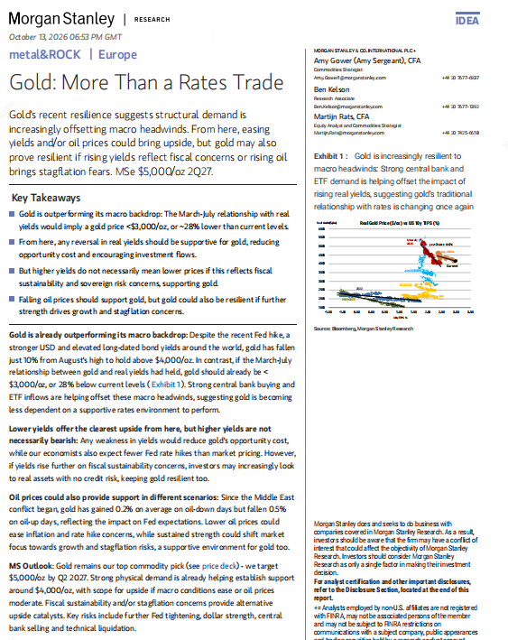
背景与关键数据
- 实际利率：名义利率减去通胀预期，市场上用美国通胀保值国债（TIPS）收益率代表。黄金不生息，实际利率越高，拿黄金的机会成本越大，传统上两者反向。
- 报告里的关键事实（来自首页截图）：尽管美联储刚加息、美元走强、长端收益率高企，金价只从 8 月高点回落约 10%，仍站在 4,000 美元上方。央行购金和 ETF 流入是主要支撑。
- 油价和黄金的关系：自中东冲突开始以来，油价下跌的日子黄金平均涨 0.2%，油价上涨的日子黄金平均跌 0.5%。这说明目前"油涨 → 加息预期升温 → 黄金跌"的渠道强于"油涨 → 避险 → 黄金涨"的渠道。
- 风险提示：美联储进一步收紧、美元走强、央行转为卖金、技术性清算。
图片解读
截图是报告首页。右侧图表 1 是"实际金价 vs 美国 10 年期 TIPS 收益率"的散点图：横轴是 TIPS 收益率（约 −1.5% 到 3%），纵轴是实际金价。不同颜色代表不同时期。2026 年 3 到 7 月的红色点群画出一条明显向右下倾斜的回归线（实际利率越高金价越低）；而最新的黑点"当前"落在这条线的右上方很远处，也就是 TIPS 在 2.5% 左右时，金价按旧关系应在 3,000 美元以下，实际却在 4,100 美元以上。这张图就是"黄金脱离利率锚"的直观证据。
为什么重要 / 对市场和经济的含义
贝莱德当天说 10 年期美债 5.25% 的涨幅主要来自实际利率（帖 7）。按旧逻辑，实际利率涨 100 多个基点，黄金应该大跌，但黄金没跌。摩根士丹利的解释是：市场现在把美债收益率上行的一部分读成"财政不可持续"的信号，这时黄金和美债不再是替代品，而是黄金替代美债成为"无信用风险的资产"。对配置的含义：如果你相信美国财政路径不会收敛（帖 17 讨论的加税争论正是这个背景），黄金在 5% 利率环境下仍可能跑赢；反之若美联储成功压住通胀、实际利率继续走高且财政担忧退潮，黄金 28% 的"溢价"就是回撤空间。
延伸知识
- 财政主导（fiscal dominance）：当政府债务高到央行不得不考虑利息负担时，货币政策会被财政绑架，倾向容忍通胀。黄金是这种情境的经典对冲。
- 央行购金：2022 年以来全球央行年购金量连续多年超过 1,000 吨，新兴市场央行（中国、波兰、印度、土耳其）是主力，动机是储备去美元化。这是金价与实际利率"脱钩"的结构性原因。
帖 5 · 14:01 · 摩根大通：9 月家电销售在低基数上继续恶化
去年 9 月家电销售已经暴跌 26%，今年 9 月在这个低基数上又跌 13%，而且主要是价格在跌，说明"以旧换新"补贴退潮后真实需求和价格都在走弱。读全文收起
帖子原文
JPM： 在 2025 年同期基数已经非常低的情况下，2026 年 9 月家电销售仍然继续恶化，而且销售额下降主要来自价格下跌，而非销量大幅萎缩。 2026 年 9 月奥维云网（AVC）家电零售数据表现疲弱，销售额同比下降 13%，较 7 月和 8 月均下降 9% 的表现进一步恶化，平均销售价格（ASP）同比下降 11%，较 8 月下降 9% 进一步扩大；销量同比下降 2%，而 8 月基本持平。这表明家电行业同时面临价格压力和终端需求疲弱的问题。线上渠道比线下更弱。 #经济数据#
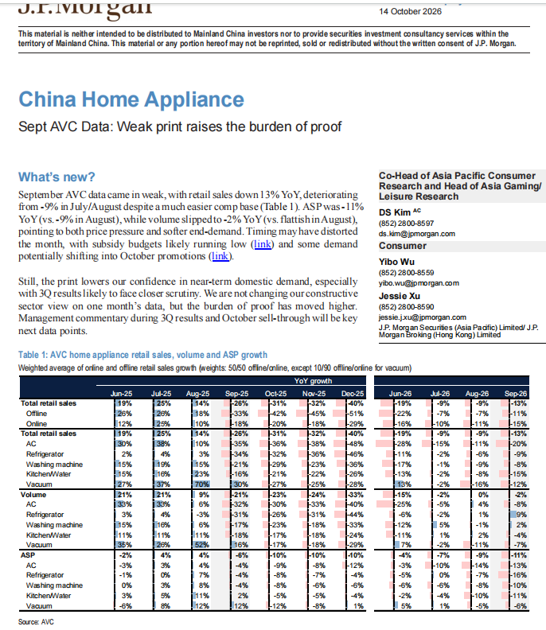
背景与关键数据
- 奥维云网（AVC）：国内家电零售监测机构，数据按线上线下加权（除清洁电器外各 50%）。
- 基数效应：2024 年下半年"以旧换新"补贴推高了销售，所以 2025 年 9 到 12 月同比分别是 −26%、−31%、−32%、−40%。今年 9 月对着 −26% 的基数仍然 −13%，意味着两年累计跌了约 36%。
- 量价拆分：销售额增速 ≈ 销量增速 + 均价增速。9 月销量 −2%、均价 −11%，合成 −13%。销量没大跌，说明人还在买，但买的是更便宜的型号或者厂商在降价。
- 报告原文补充：补贴预算可能见底，部分需求推迟到 10 月促销；摩根大通没有改变对板块的正面看法，但"举证责任"变重了，三季报和 10 月销售是关键验证点。
图片解读
截图是摩根大通《中国家电：9 月 AVC 数据，疲弱的数字加重了举证负担》首页，下方表 1 是分品类的同比增速。按 2026 年 9 月那一列读：
- 总零售额 −13%（线下 −11%，线上 −15%）。分品类：空调 −20%，冰箱 −9%，洗衣机 −8%，厨卫 −15%，清洁电器 −12%。
- 销量 −2%：空调 −8%，冰箱 +9%，洗衣机 +2%，厨卫 −4%，清洁电器 −7%。
- 均价 −11%：空调 −13%，冰箱 −16%，洗衣机 −10%，厨卫 −11%，清洁电器 −6%。
- 对比基数：2025 年 9 月总零售额 −26%，空调 −35%。
- 趋势：2026 年 6 月 −19%，7 月 −9%，8 月 −9%，9 月 −13%，再度恶化。 表里红色块越长代表跌幅越大，9 月一列几乎全红，均价那一组尤其明显。
为什么重要 / 对市场和经济的含义
家电是地产后周期消费和政策补贴的交叉点，也是观察"消费降级"最直接的窗口。销量微跌、均价大跌的组合意味着行业在打价格战，利润率受压，这与帖 20 里"中下游制造业增收不增利"的描述一致。四季度基数更低（去年 −31% 到 −40%），同比数字可能会"自动"好看一点，但那是统计幻觉，不是需求回暖。对美的、格力、海尔这类公司，三季报的毛利率比收入更值得盯。
延伸知识
- 怎么识破基数效应：看两年复合增速或者直接看绝对金额，而不是单看同比。任何"同比改善"如果发生在去年暴跌之后，都要先打折。
- 线上渠道更弱的含义：线上消费者对价格最敏感，补贴退坡首先打击线上；同时线上均价下跌更快也反映平台之间的低价竞争。
帖 6 · 16:24 · Barchart：中国就业市场的三个阶段
中国就业总人数从 2015 年起连续收缩，2025 年减少约 950 万，是除 2022 年疫情年外最大的一年。读全文收起
帖子原文
Barchart： 中国就业市场的变化可以分为三个阶段。 第一阶段：2000—2010 年，劳动力规模扩张。 人口结构相对年轻，大量农村劳动力进入非农产业，制造业、建筑业、服务业吸纳就业。 第二阶段：2011—2016 年，就业总量见顶。 劳动年龄人口增长动力减弱，新增就业逐渐无法抵消退出就业的人数。 第三阶段：2017 年以后，就业总量进入收缩。 人口老龄化、劳动参与率变化、经济结构转型，以及统计调整等因素共同作用，使就业总人数下降。 #经济数据#
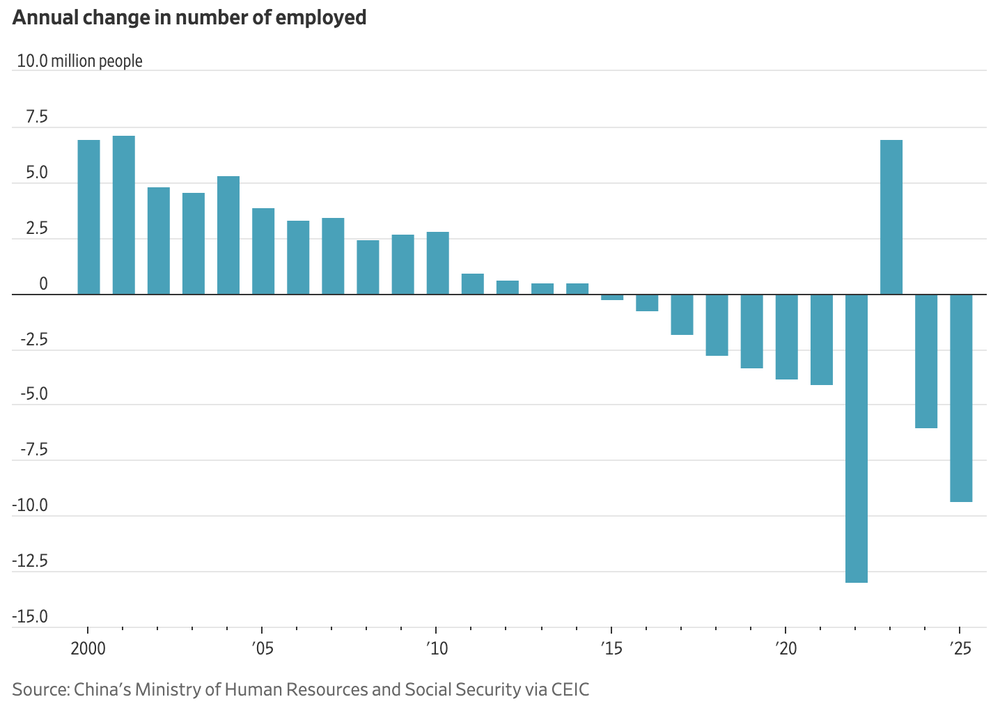
背景与关键数据
- 就业人员总数：人社部口径，约 7.3 亿人，2014 到 2015 年前后见顶。它等于劳动年龄人口 × 劳动参与率 × 就业率，三个因子现在都在往下拉。
- 人口因素：每年退出劳动力市场的人（60 岁前后退休的 1960 年代婴儿潮）超过 2,000 万，新进入的（20 岁前后）只有 1,500 万左右，差额就是就业总量自然收缩的下限。
- 统计调整：2022 年 −1,310 万和 2023 年 +680 万的大起大落部分是疫情冲击和复工回补，也有口径调整的成分，看趋势时应把这两年平滑掉。
图片解读
柱状图是"就业人数年度变化"，纵轴单位百万人，横轴 2000 到 2025 年，数据来自人社部（经 CEIC）。
- 2000 到 2010 年全部为正，从 +680 万逐年降到 +270 万左右，对应农村劳动力进城的"刘易斯"阶段。
- 2011 到 2014 年只剩 +40 万到 +80 万，基本停滞。
- 2015 年转负（−40 万），随后逐年扩大：2018 年 −290 万，2020 年 −400 万，2021 年 −430 万。
- 2022 年 −1,310 万（疫情），2023 年 +680 万（回补），2024 年 −630 万，2025 年 −950 万。 剔除疫情扰动，2024 到 2025 年的收缩速度明显比 2017 到 2021 年快，说明人口老龄化进入加速期。
为什么重要 / 对市场和经济的含义
就业人数下降意味着全社会的工资总盘子增长变慢，这是房价（帖 3、10、21）、家电（帖 5）、汽车内销（帖 11）需求疲弱的共同根源。从增长核算看，劳动力数量贡献转负后，GDP 增长只能靠人均生产率（资本深化、技术进步、AI 自动化），这也是帖 20 里企业用智能化设备替代基础岗位的宏观背景。对养老金体系，抚养比快速恶化。Jason 把它放在今天的人口系列（帖 18、19）前面，是在铺垫"人口是所有需求问题的底层变量"。
延伸知识
- 刘易斯拐点：发展经济学家刘易斯提出，农村剩余劳动力转移完毕后，工资会加速上涨。中国大约在 2010 年前后跨过这个点，图中第一阶段结束正对应这里。
- 日本的对照：日本就业人数 1997 年见顶后，靠提高女性和老年人劳动参与率，在 2013 到 2019 年又回到了新高。中国目前参与率下降和总量下降叠加，比日本当年更难靠参与率对冲。
帖 7 · 16:45 · 贝莱德：10 年期美债 5.25%，上调美债、下调美股
全球最大资管公司贝莱德把美股从超配降到中性、把短期美债升到超配，理由是 5.25% 的美债收益率已经"涨过头"，市场对美联储加息的预期太满。读全文收起
帖子原文
Blackrock: 今年以来，美国 10 年期国债收益率已经上涨 110 个基点，达到约 5.25%。 推动这一轮收益率上涨的主要因素是实际利率上升，而不是通胀预期或者期限溢价的增加。 我们认为，这种上涨已经有些过度。 自 9 月份以来，期限溢价平均维持在约 75 个基点。随着国债收益率升高，目前的收益率水平为投资者提供了更有吸引力的入场机会。 我们将短期美国国债的配置评级上调至超配（Overweight）。 原因是，我们认为市场对美联储进一步收紧货币政策的预期可能过度，这部分预期有望逐渐消退。 与此同时，我们将长期美国国债的评级上调至中性（Neutral），因为目前更高的收益率已经能够为投资者承担利率风险提供更合理的补偿。 我们还通过降低股票仓位，为增加美国国债配置提供资金。 具体来说，我们结束了长期以来对美国股票的超配立场，将其调整为中性。 这是一次短期风险管理操作，反映出我们的判断：在当前宏观经济与金融市场波动较大的环境中，投资者需要采取更加灵活的资产配置策略。 我们的核心结论是： 我们正在管理短期风险，而不是改变长期投资信念。 随着收益率上升，美国国债已经出现了值得增加配置的机会，而资金可以部分来自对美国股票的获利了结。 我们仍然看好人工智能的长期前景，并准备在经济与市场前景更加清晰、出现更有吸引力的入场价格时，重新增加风险资产配置。 #金融#
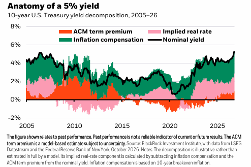
背景与关键数据
- 10 年期美债收益率拆解：名义收益率 = 实际利率 + 通胀补偿 + 期限溢价。实际利率是市场对"真实回报"的要求；通胀补偿是对未来通胀的预期（盈亏平衡通胀率）；期限溢价是投资者持有长债要求的额外补偿，反映对供给、财政、不确定性的担忧。
- 今年 +110 个基点：从年初约 4.15% 升到 5.25%。贝莱德说涨的主要是实际利率，不是通胀预期和期限溢价。这很关键：实际利率涨意味着市场认为美联储会更鹰，这部分是"可以回落"的；而如果是通胀预期失控或期限溢价飙升，那就是更难逆转的结构性问题。
- 期限溢价约 75 个基点：2010 年代长期为负，现在转正且不低，对应财政担忧，但贝莱德认为它没有继续扩大。
- 操作：短债超配（押注加息预期消退、短端收益率回落），长债中性（5.25% 的票息已能补偿久期风险），美股从超配降到中性（兑现 AI 行情收益，为债券腾资金）。
图片解读
图标题"一个 5% 收益率的解剖"，是 2005 到 2026 年美国 10 年期国债收益率的堆叠分解：橙色是 ACM 期限溢价（纽约联储模型），绿色是通胀补偿，粉色是隐含实际利率，黑线是名义收益率。
- 2005 到 2007 年名义约 4.5% 到 5%，三块都是正的。
- 2012 到 2021 年期限溢价为负（橙色在零轴下方），实际利率也多次为负，所以名义收益率只有 1% 到 3%。
- 2022 年起三块同时转正并扩大，2026 年末名义冲到 5.3% 左右，其中粉色实际利率明显比 2023 到 2024 年更厚，这就是贝莱德说"实际利率驱动"的依据。
- 图注说明分解只是示意，实际利率是名义减去通胀补偿和期限溢价的余项。
为什么重要 / 对市场和经济的含义
- 美股估值压力：标普 500 在 7,807 点（帖 14 数据），假设前瞻市盈率 22 倍，盈利收益率约 4.5%，已经低于 5.25% 的无风险利率，股权风险溢价为负，这在历史上只有 2000 年前后出现过。机构"卖股买债"有了算术基础。
- 机构共识正在形成：贝莱德和摩根士丹利（帖 14）同一天得出同方向的结论。这不等于美股马上跌，但说明边际资金的天平在倾斜。
- 对黄金：实际利率升到 2.5% 左右本应压制黄金，但金价仍在 4,100 美元以上（帖 4、15），黄金在与利率脱钩。
- 对美联储：市场定价 12 月再加息（帖 15），贝莱德押注这个预期会退潮，和威廉姆斯"2027 年不需要再加"的说法一致。
延伸知识
- 久期（duration）：衡量债券价格对利率的敏感度。10 年期美债久期约 8，收益率每下降 39 个基点（摩根士丹利对 2027 年二季度的预测，帖 14），价格约涨 3%，加上 5.2% 票息，一年总回报约 8%，这就是"更合理的补偿"的意思。
- 战术配置 vs 战略配置：贝莱德强调这是短期风险管理而非改变长期信念。机构通常把长期配置（战略）和 3 到 12 个月的偏离（战术）分开，读这类报告时要分清说的是哪一层。
帖 8 · 17:34 · 调研趣事：门槛是两袋旅行袋
一则研究员时期的调研段子：某些"订单稳定"的真实门槛是回扣和关系，而不是技术，这种东西写不进研究报告。读全文收起
帖子原文
以前调研趣事： 我：X 总，这个订单我看这几年一直挺稳的，这个部件有啥门槛伐？ X 总：你不看客户是谁。门槛很高，但不主要是技术门槛。 我打开电脑准备记录，X 总一把按下来：你看到那个旅行袋了没有？ 我：看到了。 X 总：每次去孝敬两袋。 我：…..我怎么在报告里写？ X 总：你自己想办法。
背景与关键数据
"调研"是 A 股研究的核心环节，卖方和买方研究员到上市公司实地访谈，判断公司的"护城河"。段子里的"门槛很高，但不主要是技术门槛"点破了一个系统性偏差：研究报告倾向于把稳定订单归因于技术壁垒、产品质量，因为"关系门槛"没法写，于是读者看到的护城河是被美化过的。
为什么重要 / 对市场和经济的含义
- 它解释了为什么有些公司客户稳定多年，但一遇到反腐、客户换人或采购规则改变就业绩崩塌。2023 年医药反腐后大量企业销售费用骤降、收入同步下滑，就是这个逻辑的集中体现。
- 对投资者的实操提示：不要把"订单稳定"直接等于"竞争壁垒"。要看客户集中度、客户是不是政府或国企采购、销售费用率是否远高于同行（"旅行袋"的钱总要走账）。
- 和今天的帖 9（尊界刹车事件，行业回归工程信誉）、帖 11（出口要 OEM 授权、打击灰色渠道）放在一起读：当"关系"驱动的生意模式退潮，真正的技术和质量门槛才会被重新定价。
延伸知识
- 寻租（rent-seeking）：经济学家 Tullock 和 Krueger 在 1960 到 70 年代提出，指通过影响规则或决策者来获取利益，而不是通过创造价值。寻租成本最终由全社会承担，因为资源被用在了"送旅行袋"而不是研发上。
- 会计上的红旗：业务招待费、销售费用率异常、大额"咨询费"、与客户所在地的关联交易。审计师和做空机构看这些科目找商业贿赂线索。
帖 9 · 18:03 · 瑞银：尊界刹车事件标志着行业转折点
瑞银认为尊界 V800 刹车踏板断裂事件会推动中国车市从"快速迭代、拼新车数量"转向"工程验证、可靠性、安全"，华为鸿蒙智行系品牌信誉受损。读全文收起
帖子原文
瑞银： 这一事件标志着行业转折点
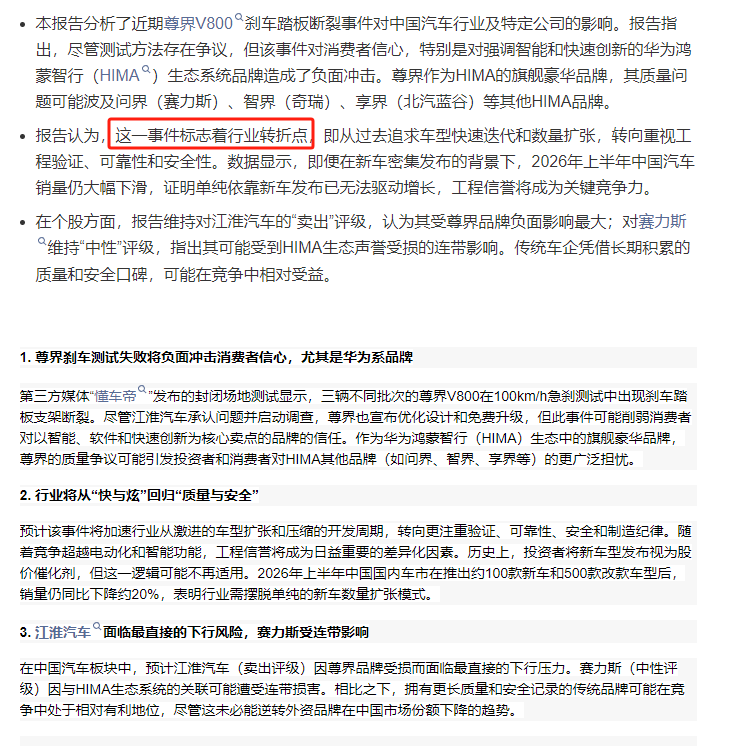
背景与关键数据
- 事件：第三方媒体"懂车帝"的封闭场地测试中，三辆不同批次的尊界 V800 在 100 公里/小时急刹测试时出现刹车踏板断裂。江淮汽车承认问题、宣布优化设计并免费升级，但瑞银指出测试方法仍有争议。
- 尊界与 HIMA：尊界是华为鸿蒙智行（HIMA）的旗舰豪华品牌，由江淮代工。HIMA 模式是华为提供智能驾驶、座舱和销售渠道，车企负责制造。同一生态还有问界（赛力斯）、智界（奇瑞）、享界（北汽蓝谷）。
- 关键数据：2026 年上半年中国车市推出约 100 款新车和 500 款改款，销量仍同比下降约 20%。这与帖 11 里"1 到 9 月乘用车零售同比 −22.4%"互相印证。
- 评级：江淮汽车"卖出"（受尊界品牌负面影响最大），赛力斯"中性"（HIMA 生态连带）。拥有长期质量和安全口碑的传统车企相对受益。
图片解读
截图是瑞银报告的中文摘要，分三段：
- 尊界刹车测试失败负面冲击消费者信心，尤其是华为系品牌，可能引发对 HIMA 其他品牌的更广泛担忧。
- 行业将从"快与炫"回归"质量与安全"。随着竞争超越电动化和智能化，工程信誉成为日益重要的差异化因素；历史上投资者把新车发布视为股价催化剂，这个逻辑可能不再适用。
- 江淮汽车面临最直接的下行风险，赛力斯受连带影响。 红框标注的"这一事件标志着行业转折点"是 Jason 想强调的句子。
为什么重要 / 对市场和经济的含义
- 投资逻辑切换：过去几年中国车企的股价靠"新车发布节奏"驱动，现在 100 款新车救不了 20% 的销量下滑，说明行业进入存量博弈，质量和安全成为新的差异化因素。
- 品牌信誉是"合并资产负债表"：华为生态下多个品牌共用一个信任账户，一个品牌出事，所有品牌一起折价。这对 HIMA 模式的估值方法是一个提醒。
- 与帖 11 的联动：出口被欧盟管住、内销下滑 22%、质量事件打击高端化，中国车企"量、价、品牌"三端同时承压。
延伸知识
- 丰田"刹车门"（2009 到 2010 年）：丰田在美国召回约 900 万辆车，股价一度跌 20%，花了约 3 年才完全修复品牌。质量事件对品牌的折价是长期的，不是一个季度的事。
- 信号理论与新品牌：消费者无法直接观察汽车安全性，只能靠品牌的历史记录推断。新品牌的"信誉资本"薄，一次事故的冲击比老品牌大得多。这也是为什么软件行业"快速迭代"的方法论搬到安全件上风险完全不同（汽车功能安全标准 ISO 26262 要求的验证周期以年计）。
帖 10 · 18:05 · 瑞联：重点城市存量住宅均价季度环比 −1.50%、同比 −8.06%
重点城市二手房成交均价已经连续 24 个月下跌，累计跌约 15%，同比跌幅从 9% 以上收窄到 8%，但月度曲线仍是一条几乎没有拐点的直线。读全文收起
帖子原文
瑞联： 9 月底，全国重点城市存量住宅加权均价季度环比跌幅 1.50%，同比跌幅 8.06%。存量住宅价格下行趋势明显放缓，同比跌幅持续收窄。 #房价#
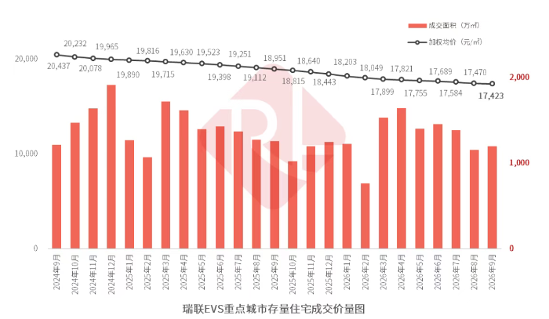
背景与关键数据
- 存量住宅：就是二手房。"加权均价"是实际成交价按面积加权，和帖 21 的"挂牌价"（卖家报价）不同：挂牌价领先，成交价滞后且更"真实"。
- 瑞联 EVS：房地产估价系统，理论上做了同质化调整，减少"本月郊区成交多所以均价低"这类结构干扰。
- 数字：2024 年 9 月 20,437 元/平米，2026 年 9 月 17,423 元/平米，累计 −14.7%。季度环比 −1.5% 年化约 −6%。
图片解读
图是"瑞联 EVS 重点城市存量住宅成交价量图"，2024 年 9 月到 2026 年 9 月：
- 黑线（右轴）是加权均价，从 20,437 一路平滑下行到 17,423，每个月都比上个月低，没有一次反弹。2025 年 9 月是 18,951，所以同比 = 17,423 ÷ 18,951 − 1 = −8.06%；2026 年 6 月是 17,689，季度环比 = 17,423 ÷ 17,689 − 1 = −1.50%，和帖子数字吻合。
- 红柱（左轴）是成交面积（万平米）：2024 年 12 月冲高到约 1,800（政策刺激后的放量），2026 年 2 月跌到约 650 的低点（春节），2026 年 3 到 5 月"小阳春"回到 1,500 到 1,600，7 到 9 月又回落到 1,100 到 1,200。
- 关键观察：价格下跌期间成交量并没有系统性放大，也就是"降价没换来量"。
为什么重要 / 对市场和经济的含义
"跌幅收窄"是瑞联的措辞，图上看更像"匀速下跌"。按帖 3 摩根大通的框架，价格要企稳需要租金收益率回到合理水平、租金企稳、收入预期改善，三个条件目前只有上海部分满足。对家庭资产负债表，中国家庭资产六到七成是房产，两年 15% 的成交价跌幅意味着显著的负财富效应，这是消费（帖 5）疲弱的另一个来源。
延伸知识
- 量在价先：房地产周期里通常是成交量先放大、价格才企稳（2015 年深圳、上海都是这个顺序）。目前量没有持续放大，底部信号不充分。
- 三套房价数据的口径差异：国家统计局 70 城指数（抽样、平滑，跌幅最温和）、中介成交价（瑞联、贝壳，反映真实成交）、挂牌价（国信达等，反映卖家心理，最领先也最悲观）。读房价新闻先问是哪一套。
帖 11 · 18:20 · 摩根士丹利：中国汽车出口从价格战转向"管理贸易"（附 PDF）
中欧谈判正把关税战变成"配额 + 最低价格 + 本地化"的管理贸易，再加上出口退税砍 4 个点，中国车企的出口红利从量、价、利润三个方向同时收紧。读全文收起
帖子原文
摩根斯坦利： 我们与中国汽车工业协会（CAAM）一位常务副秘书长进行了电话交流，讨论中欧汽车贸易谈判、出口监管以及增值税退税调整。最重要的结论是：中国汽车出口可能正在从自由扩张、低价抢市场，转向配额约束、最低价格承诺和海外本地化生产。 如果未来每年只能出口 40 万辆，那么即使不考虑 2026 年最后四个月，2026 年前 8 个月的出口量也已经超过这一潜在年度上限 22.5%。如果以 35 万辆计算，超出幅度则达到 40%。混动车可能被纳入最低价格承诺机制，其价格基准可能参考车辆进入欧盟后的到岸价格，加上相关关税。传统关税保护的逻辑是提高进口成本，而最低价格承诺的逻辑是直接约束市场售价。如果两者与数量限制结合，中国汽车企业就可能同时受到三个约束：不能无限增加出口数量。不能通过持续降价扩大市场份额。需要在新的贸易规则下证明产品的品牌、技术和服务价值。这意味着中国汽车出口可能从过去的价格竞争，转向更重视品牌、渠道、产品差异化和本地生产能力的竞争。 增值税退税率从 13% 降到 9%，意味着什么？如果其他条件不变，企业原本能够获得的退税减少，出口业务利润空间就可能被压缩。国内需求疲弱，海外市场又开始增加贸易限制，中国汽车企业的增长空间可能同时受到两端挤压。 #经济数据#
附件：Managed trade replaces price war - China auto exports enter the quality era_.pdf
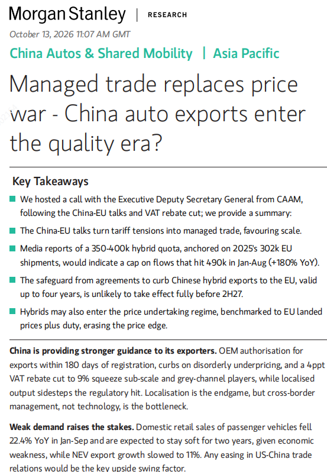
背景与关键数据
- 三种贸易工具的区别：关税是提高进口成本但不限量；配额是限量不限价；最低价格承诺（price undertaking）是出口商承诺售价不低于某个基准，限价不限量。三者叠加，就是"不能多卖、不能便宜卖、还得证明自己值这个价"。
- 为什么是混动：2024 年欧盟对中国纯电动车加征 17% 到 35% 的反补贴税，插电混动不在范围内，于是中国车企转向出口混动。2025 年对欧混动出口 30.2 万辆，2026 年 1 到 8 月已达 49 万辆（同比 +180%）。欧盟现在要堵这个口子，媒体报道的配额是 35 万到 40 万辆。
- Jason 的算术：49 万 ÷ 40 万 = 1.225，前 8 个月已超年度上限 22.5%；按 35 万算超 40%。
- 出口退税 13% → 9%：出口退税是退还国内环节已缴的增值税。少退 4 个点相当于出口成本上升 4%，对净利率只有 5% 左右的车企影响巨大。
- 报告其他要点（来自首页截图）：保障措施有效期最长 4 年，但 2027 年下半年前不太可能完全生效；出口需 OEM 在注册后 180 天内授权、打击无序低价，挤压的是小规模和灰色渠道（平行出口的"零公里二手车"）玩家；本地化生产是终局，瓶颈不是技术而是跨境管理能力；国内乘用车零售 1 到 9 月同比 −22.4%，预计两年疲软；新能源车出口增速放缓到 11%；美中贸易缓和是上行变量。
图片解读
截图是摩根士丹利《管理贸易取代价格战：中国汽车出口进入质量时代？》首页，2026 年 10 月 13 日。要点栏五条：与中汽协常务副秘书长通话；中欧谈判把关税紧张转为有利于规模企业的管理贸易；35 万到 40 万辆混动配额以 2025 年 30.2 万辆为锚；保障措施最长 4 年、2027 年下半年前难以完全生效；混动可能进入最低价格承诺机制，基准为欧盟到岸价加关税，这会抹掉价格优势。下方两段分别讲"中国正在给出口商更强的指导"和"需求疲弱提高了赌注"。
为什么重要 / 对市场和经济的含义
- 对车企：过去两年比亚迪、奇瑞、吉利、上汽的利润增长主要靠出口对冲内销下滑，现在出口被"量价双限"，本地化建厂（匈牙利、土耳其、西班牙、泰国）从可选变成必选，资本开支上升、回报周期拉长。
- 对欧洲车企：中国混动的价格优势被抹平，大众、Stellantis、雷诺获得喘息，这和帖 14 摩根士丹利看多欧洲股票的判断有呼应。
- 对宏观：中国"出口转移"的空间在收窄（汽车只是第一个被管的行业），内需又疲弱（帖 5 家电、帖 10 房价），这就是 Jason 说的"两端挤压"。出口退税下调也和帖 19 梁建章"出口退税 2.13 万亿不如拿来补贴生育"的观点形成有趣的对照。
延伸知识
- 日美汽车"自愿出口限制"（1981 到 1994 年）：日本同意每年对美出口不超过 168 万辆。结果是丰田、本田去美国建厂（丰田肯塔基工厂 1988 年投产），并转向高端品牌（雷克萨斯 1989 年诞生）。摩根士丹利标题里的"质量时代"正是这个历史模板，配额逼出了本地化和高端化。
- 管理贸易（managed trade）：介于自由贸易和保护主义之间，用谈判确定的数量和价格框架替代市场竞争。它的典型后果是大企业受益（有能力本地化）、小企业出局，这也是报告说"favouring scale"的原因。
帖 12 · 18:23 · 摩根大通 A 股策略：看好 AI 盈利，谨慎资金面（附 PDF）
摩根大通维持"高股息 + AI"的杠铃策略，但指出 A 股缺增量资金、AI 板块动量资金在退潮，地缘风险（美国限制中国 AI 供应链）是悬而未决的鞋子。读全文收起
帖子原文
JPM： 我们仍然看好中国 AI 产业的盈利增长，却对 A 股市场的资金环境和 AI 板块的短期股价表现保持谨慎。 #A股#
附件：China A-shares Equity Strategy_ Onshore flows remain subdued, but AI still anchors the growth side of our barbell approach.pdf
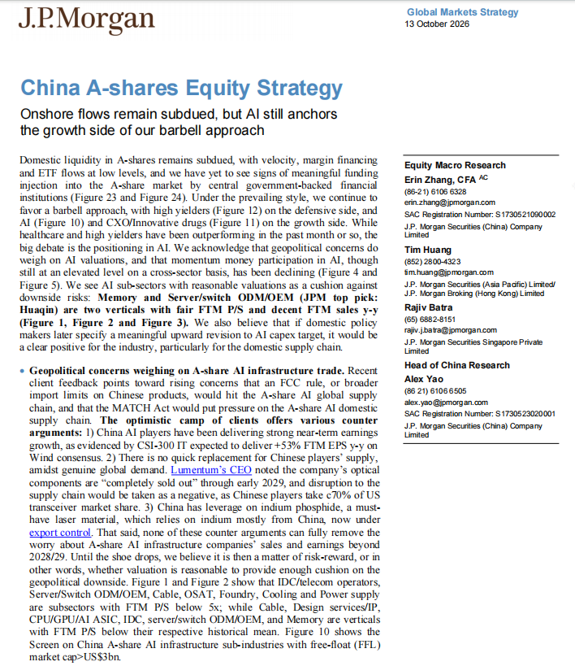
背景与关键数据
- 资金面指标：换手率、两融余额、ETF 净流入都处于低位，也没看到国家队（中央政府背景的金融机构）有意义的注资迹象。
- 杠铃策略：一端配防守型高股息（银行、公用事业、能源），另一端配成长型 AI 和 CXO/创新药，中间不碰。过去一个月医药和高股息跑赢。
- AI 板块内部：动量资金参与度仍高但在下降。估值合理的子行业是存储和服务器/交换机 ODM/OEM（摩根大通首选华勤）。IDC/电信运营商、服务器/交换机 ODM、线缆、封测、代工、散热、电源的前瞻市销率都低于 5 倍。
- 地缘风险：客户担心美国 FCC 规则、更广泛的进口限制、MATCH 法案会打击 A 股 AI 全球供应链。乐观派的三个反驳：沪深 300 信息技术板块前瞻 EPS 预计 +53%；没有快速替代方案（Lumentum CEO 说光学元件到 2029 年初"完全售罄"，中国厂商占美国光模块市场约 70%）；中国有磷化铟出口管制作为筹码。但这些都解决不了 2028/29 年之后的担忧。
图片解读
截图是摩根大通《A 股策略：在岸资金仍然低迷，但 AI 仍是杠铃成长端的锚》首页，2026 年 10 月 13 日。正文第一段讲资金面和杠铃配置，第二段"地缘政治担忧压制 A 股 AI 基建交易"列出乐观派的三个反驳，并指出图 1、图 2 中哪些子行业市销率低于 5 倍、哪些低于历史均值（线缆、设计服务/IP、CPU/GPU/AI ASIC、IDC、服务器/交换机 ODM、存储）。
为什么重要 / 对市场和经济的含义
- "盈利看多 + 股价谨慎"是典型的"好公司不等于好股票"：在没有增量资金的市场里，盈利增长 53% 也可能跑不赢高股息。
- 保险公司偏好高股息（帖 13）正好给杠铃的防守端提供了买家，这是摩根大通配置的资金面依据。
- 光模块和磷化铟这条线对关注 AI 硬件供应链的读者很重要：中国在光模块组装和铟（磷化铟衬底的关键材料）上的份额，是中美科技博弈里少数的中方筹码。
延伸知识
- 杠铃策略的来源：塔勒布在《反脆弱》里提出，把资产分成极安全和极激进两端，避免"中等风险"。在 A 股语境下就是"高股息 + 高成长"。
- 磷化铟（InP）：高速光通信激光器的衬底材料。中国 2025 年 2 月起对铟相关物项实施出口管制。AI 数据中心的 800G/1.6T 光模块离不开它，这是"卡脖子"的反向案例。
- 前瞻市销率（FTM P/S）：市值除以未来 12 个月预期收入。对尚未盈利或利润波动大的硬件公司，市销率比市盈率更常用。
帖 13 · 18:25 · 摩根士丹利：上海保险业实地调研（附 PDF）
保险需求没问题，但三季度银保渠道受监管压制、多数保险公司因股市回调会报三季度净亏损，资产端越来越偏好高股息股票。读全文收起
帖子原文
摩根斯坦利： 《上海实地调研的核心发现》，通过走访保险公司及一线销售人员，观察了中国保险市场的需求、银行代销渠道、监管影响和保险公司的投资行为。结论是：中国保险需求依然稳健，但保险公司第三季度的销售增长和会计利润都面临压力。与此同时，部分保险公司正在更加偏好高股息股票。 #A股#
附件：Key Takeaways From Shanghai Trip.pdf
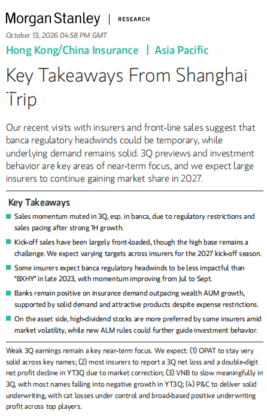
背景与关键数据
- 银保渠道（banca）：通过银行网点卖保险。2023 年底的"报行合一"（BXHY，要求实际费用与报备一致）砍掉了银保的高佣金，当时冲击很大。这次的监管逆风被认为比那次小，7 到 9 月动能在改善。
- 开门红：每年四季度到次年一季度的集中销售。今年前置明显，高基数是挑战。
- 三季度利润：营运利润（OPAT，剔除投资波动）稳健；但多数保险公司三季度会报净亏损，年初至今净利润双位数下滑，原因是"市场回调"。在新会计准则下，股票按公允价值计入利润表，股市一跌利润就被拖下水。
- 新业务价值（VNB）：一张新保单未来利润的现值，三季度明显放缓，多数公司前三季度转负。
- 资产端：部分保险公司在波动中更偏好高股息股票；新的资产负债管理（ALM）规则可能进一步引导投资行为。财险承保稳健，巨灾损失可控。
图片解读
截图是摩根士丹利《上海之行的关键收获》首页，2026 年 10 月 13 日。五条要点：三季度销售动能减弱尤其是银保；开门红前置，各家 2027 年目标不一；部分公司认为银保逆风比 2023 年底的报行合一轻，7 到 9 月改善；银行对保险需求乐观，增速超过财富管理 AUM；高股息股票更受青睐，新 ALM 规则可能引导投资。底部一段预览三季度：OPAT 稳、多数净亏损、VNB 放缓、财险承保稳。
为什么重要 / 对市场和经济的含义
- 保险公司是 A 股最大的耐心资本之一。他们偏好高股息，直接支撑银行、公用事业、能源等板块的估值，这与帖 12 摩根大通杠铃的防守端是同一枚硬币的两面。
- **"多数保险公司三季度净亏损"**透露了一个信息：2026 年三季度中国股市有一次明显回调，大到足以让保险公司的权益投资浮亏吞掉利润。
- 大公司份额提升意味着行业集中度上升，中小保险公司在低利率环境下的利差损风险更大。
延伸知识
- 寿险利润三源：死差（实际死亡率低于定价）、费差（实际费用低于定价）、利差（投资收益高于保单承诺利率）。中国寿险主要靠利差，利率下行时存量保单的承诺利率成为负担，这就是 1990 年代日本七家寿险公司倒闭的原因。
- 新会计准则（IFRS 9 和 IFRS 17）：2023 年起上市保险公司切换新准则，股票投资大多按公允价值计入损益，利润波动被放大。高股息股票可以放进"以公允价值计量且变动计入其他综合收益"（FVOCI）科目，只收股息不影响利润表，这就是保险公司偏好高股息的会计原因。
帖 14 · 18:31 · 摩根士丹利跨资产周报：更高的收益率，更宽的信用利差（附 PDF）
摩根士丹利的资产排序是美债 > 欧股 > 美股，美元偏强；上周的三个异常信号是法德利差升到 2011 年以来最高、美元兑日元突破 158、韩国 KOSPI 一周跌 8.84%。读全文收起
帖子原文
摩根斯坦利： 《更高的收益率，更宽的信用利差》，全球跨资产策略周报，涵盖股票、国债、信用债、汇率、商品、ETF 资金流向、投资者仓位及资产估值。全球金融市场正在同时承受主权信用风险、利率压力、地缘政治风险和资金去风险化的冲击。 摩根士丹利给出的 2027 年第二季度预测，组合：美国国债收益率可能回落，欧洲股票有较大的预期上涨空间，而美元仍有进一步走强的可能。 由于缺乏流动性和上涨催化剂，韩国 KOSPI 指数下跌 8.84%。摩根士丹利韩国分析师认为，目前外国投资者的抛售更多属于降低风险敞口的行为，并预计这一趋势短期内可能延续。 摩根士丹利并不认为美国股票是未来几个季度最有吸引力的资产。其基准情景下，欧洲股票预期回报 13.5%，高于标普 500 的 7.1%。摩根士丹利看好美国国债收益率回落带来的总回报。美国 10 年期国债收益率预计从 5.24% 降至 4.85%，下降 39 个基点。这意味着投资者不仅可能获得票息收入，还可能获得债券价格上涨带来的资本收益。虽然报告给出的黄金价格基准预测为 5,000 美元，高于当时的 4,172 美元，但其基于期货的基准情景回报却为 -4.2%。 #金融#
附件：Higher Yields, Wider Spreads_ Cross-Asset Spotlight _ Global.pdf
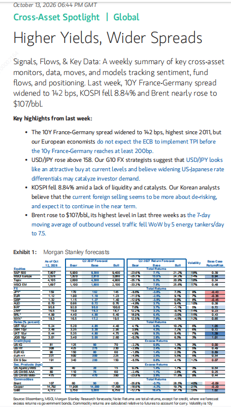
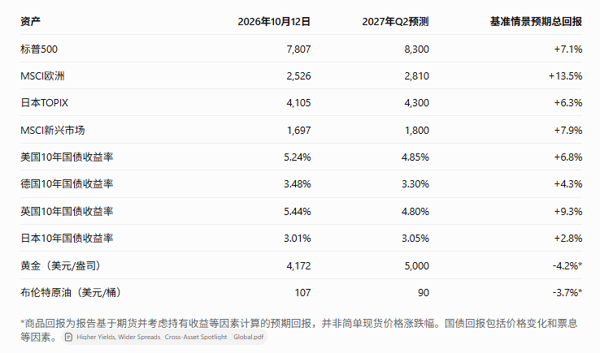
背景与关键数据
- 法德利差 142 个基点：法国 10 年期国债收益率减去德国的，衡量欧元区内部的财政和政治风险，142 是欧债危机以来最高。摩根士丹利的欧洲经济学家认为欧洲央行在利差达到 200 个基点前不会启动"传导保护工具"（TPI，2022 年设立的无限量购债工具）。
- 美元兑日元 158+：接近 2024 年日本政府干预的 160 区间；摩根士丹利 G10 外汇团队反而认为这是买入美元兑日元的好位置，因为美日利差在扩大。
- KOSPI −8.84%：韩国股市今年涨幅巨大后，外资去风险化。摩根士丹利认为抛售会持续一段时间。
- 布伦特 107 美元：三周新高，出港油轮 7 日均值每天减少 5 艘至 7.5 艘，供给端受中东冲突（帖 16）影响。
- 一个需要纠正的数字：Jason 转写的表里"黄金基准回报 −4.2%"对不上原表。放大核对后，原表黄金一行是：现价 4,172，熊/基准/牛 = 3,750 / 5,000 / 6,750，总回报 −12.7% / +16.4% / +57.1%，回报风险比 1.02。−4.2% 是铜那一行的基准回报（14,792 → 14,000）。所以黄金在摩根士丹利的基准情景下回报为正，而且回报风险比在整张表里仅次于英国国债（1.39）、美国国债（1.05），和日本国债（1.01）并列第一梯队。布伦特 107 → 90 的 −3.7% 是对的。
图片解读
图 1是报告首页。上半部分列上周要点（法德利差、美元兑日元、KOSPI、布伦特）。下半部分"表 1：摩根士丹利预测"是整份周报的核心，按资产类别给出 2026 年 10 月 12 日现值、2027 年二季度熊/基准/牛三档预测、对应总回报、波动率和回报风险比：
- 股票：标普 500 现值 7,807，预测 5,900 / 8,300 / 9,400，回报 −23.6% / +7.1% / +21.2%，波动 18%，回报风险比 0.39。MSCI 欧洲 2,526 → 1,820 / 2,810 / 3,060，回报 −25.7% / +13.5% / +24.2%，回报风险比 0.94。日本 TOPIX 4,105 → 4,300 基准（+6.3%）。MSCI 新兴市场 1,697 → 1,800（+7.9%）。
- 外汇：美元兑日元 159 → 基准 162（美元继续强），欧元 1.12 → 1.10，英镑 1.32 → 1.27。
- 利率：美债 10 年 5.24% → 5.20 / 4.85 / 4.40，总回报 +4.1% / +6.8% / +10.2%，回报风险比 1.05。德债 3.48% → 3.30%（+4.3%）。英债 5.44% → 4.80%（+9.3%，回报风险比 1.39，全表最高）。日债 3.01% → 3.05%（+2.8%）。
- 信用：美国投资级利差 81 → 90，高收益 308 → 275，超额回报都只有 0 到 2%。
- 商品：布伦特 107 → 60 / 90 / 120，回报 −35.8% / −3.7% / +28.5%，波动率 40%。铜 14,792 → 14,000（−4.2%）。黄金如上。 注释说明商品回报是相对期货计算、考虑了展期收益。
图 2是 Jason 整理的中文对照表，把主要资产的现值、2027 年二季度预测和基准回报列出来。除了黄金那一格把铜的 −4.2% 错填进去，其余数字与原表一致。
为什么重要 / 对市场和经济的含义
- 机构共识：摩根士丹利和贝莱德（帖 7）同一天得出"美债比美股划算"的结论。标普基准回报 7.1% 但熊市情景 −23.6%，而美债基准 6.8% 熊市还有 +4.1%，风险收益明显不对称。
- 欧洲 > 美国：13.5% 对 7.1%，摩根士丹利认为欧股估值更便宜，而且中欧汽车贸易管理（帖 11）这类变化对欧洲企业有利。
- 商品回报要看期货曲线：布伦特现货从 107 跌到 90 是 −16%，但期货回报只有 −3.7%，因为油价在供应紧张时呈"现货贵、远期便宜"的贴水结构，持有期货每次换月都有正收益。黄金相反，期货比现货贵（要付利息成本），所以现货 +19.8% 对应期货 +16.4%。
- KOSPI 的提示：韩国是全球存储芯片（三星、SK 海力士）的大本营，KOSPI 一周跌近 9% 对 AI 硬件链是一个风险信号。
延伸知识
- 总回报 vs 价格回报：债券总回报 = 票息 + 价格变动（久期 × 收益率变化）。10 年期美债收益率降 39 个基点，价格约 +3%，加 5.2% 票息，约 8%，与表中 6.8% 量级一致（表中是到 2027 年二季度的 8 个月）。
- 展期收益（roll yield）：商品期货到期前要卖近月买远月。贴水时（近月贵）换月赚钱，升水时（远月贵）换月亏钱。这就是为什么原油 ETF 在升水时长期跑输现货。
- 回报风险比：预期回报除以波动率，是夏普比率的简化版。1.0 以上在跨资产表里属于"高性价比"。
帖 15 · 18:44 · 彭博：掉期交易者预计 12 月加息概率约 90%
美联储上个月重启加息后，市场定价 10 月不动、12 月再加一次（概率约 90%），纽约联储行长威廉姆斯也说今年还要加一次但 2027 年不需要；黄金在 4,157 美元附近小幅回落。读全文收起
帖子原文
bloomberg： 掉期交易者预计本月美联储政策会议上上涨概率较低，但预计 12 月上涨概率约为 90%。 #金融#
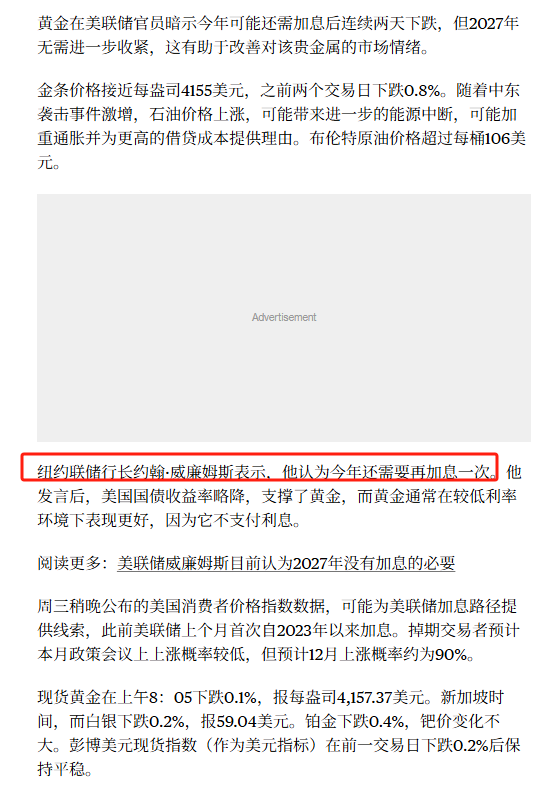
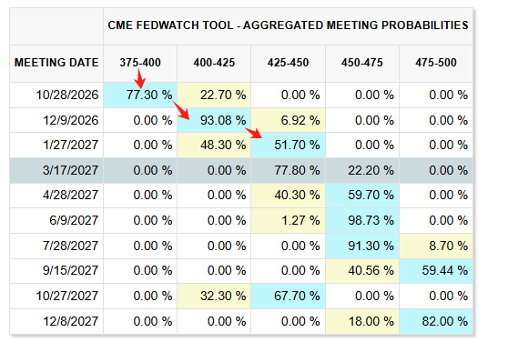
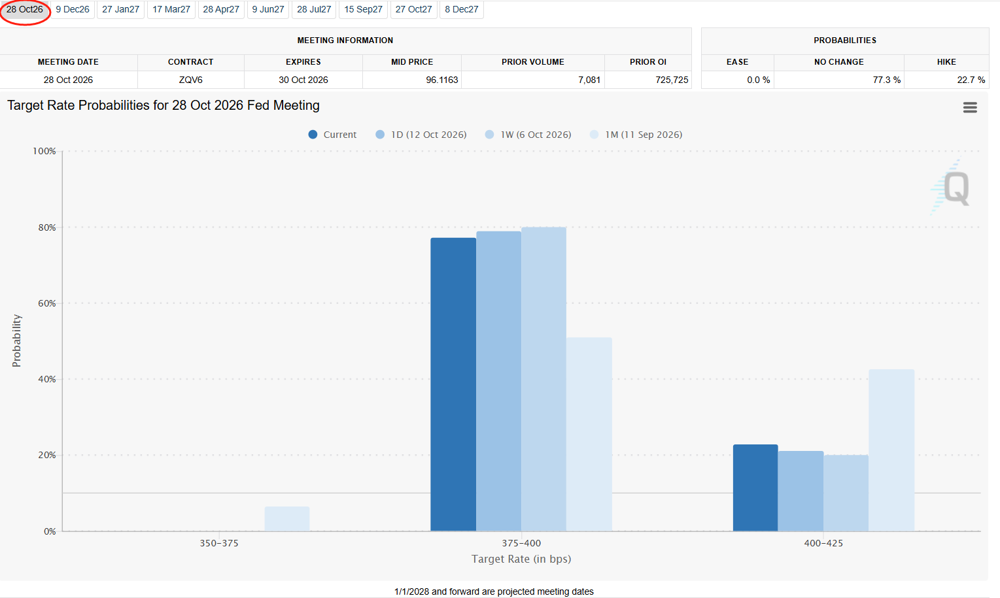
背景与关键数据
- **"上涨概率"**是彭博中文机翻的"hike probability"，就是加息概率。
- 当前利率：从 FedWatch 看，10 月 28 日会议"不变"对应 3.75% 到 4.00%，所以现在的联邦基金目标区间是 3.75% 到 4.00%。美联储上个月（2026 年 9 月）的加息是 2023 年 7 月以来的第一次，背景是油价 107 美元和中东冲突推高通胀。
- 威廉姆斯的表态：今年还需要再加息一次，但他认为 2027 年没有加息的必要。发言后美债收益率略降，支撑了黄金。
- 数据节点：周三稍晚公布的 9 月 CPI 是下一个加息路径线索。
- 金银：现货黄金 4,157.37 美元（−0.1%），此前两天跌 0.8%；白银 59.04 美元；铂金 −0.4%；彭博美元指数持平。
图片解读
图 1是彭博中文报道截图：黄金在官员暗示年内还需加息后连续两天下跌；中东袭击激增、油价上涨可能带来能源中断、加重通胀；威廉姆斯"今年还需要再加息一次"被红框标出；掉期定价 12 月约 90%；金银铂报价。
图 2是 CME FedWatch 的会议概率汇总表，行是会议日期，列是利率区间（基点）：
- 2026 年 10 月 28 日：3.75 到 4.00 的概率 77.3%（不加），4.00 到 4.25 的概率 22.7%（加 25 个基点）。
- 2026 年 12 月 9 日：4.00 到 4.25 的概率 93.08%，4.25 到 4.50 的概率 6.92%。也就是到 12 月至少加一次几乎是定价满了。
- 2027 年 1 月 27 日：4.00 到 4.25 和 4.25 到 4.50 各约一半，第二次加息五五开。
- 2027 年 3 月 17 日：4.25 到 4.50 的概率 77.8%，4.50 到 4.75 的概率 22.2%。
- 2027 年 6 月 9 日：4.50 到 4.75 的概率 98.7%，市场认为到明年年中会加到 4.50% 以上。
- 2027 年下半年的几行（10 月突然回到 4.00 到 4.50，12 月又跳到 4.75 到 5.00）前后不连贯，远月合约流动性差，这些数字不必当真。 红色箭头标出的是"10 月不动 → 12 月加 → 1 月可能再加"这条主线。
图 3是 10 月 28 日会议的详细页：合约 ZQV6（2026 年 10 月联邦基金期货），中间价 96.1163，对应隐含利率 3.88%；前一日持仓 72.6 万手。柱状图对比当前（深蓝）、1 天前、1 周前、1 个月前的概率分布：一个月前（9 月 11 日，美联储加息之前）市场认为 10 月会议后利率在 3.75 到 4.00 的概率只有 51%，在 4.00 到 4.25 的概率有 42%；现在变成 77% 对 23%。也就是说，过去一个月市场对加息的预期其实是在降温的。
为什么重要 / 对市场和经济的含义
- 这帖是今天所有美债、黄金、美股判断的"利率锚"。贝莱德说"市场对收紧的预期过度"（帖 7），指的就是这张表里 2027 年上半年加到 4.50% 以上的定价；威廉姆斯说 2027 年不需要加，和贝莱德站在一边。
- 对黄金：在"年内再加一次"的预期下金价仍在 4,150 美元以上，说明利率对黄金的压制力在减弱（帖 4）。
- 对股票：如果 CPI 超预期，12 月加息坐实、2027 年加息预期升温，美债 5.25% 可能继续上行，美股估值压力加大。
延伸知识
- 联邦基金期货怎么定价：价格 = 100 − 当月预期平均有效联邦基金利率。96.1163 意味着市场预期 10 月平均利率 3.88%，略高于当前约 3.83% 的有效利率，差额换算成"加息 25 个基点的概率"就是 22.7%。
- 点阵图 vs 市场定价：美联储每季度公布官员对利率的预测（点阵图），市场定价常与之偏离。偏离方向本身是信息：现在市场比美联储更鹰，意味着一旦数据走弱，收益率回落的空间大。
- 加息周期里的黄金：1994 到 1995 年和 2022 年两轮加息中黄金都承压，这次不同的原因见帖 4。
帖 16 · 18:47 · zerohedge：沙特阿美总部遭袭，沙特拒绝以色列加入也门行动
也门胡塞武装的弹道导弹打到了沙特阿美在达兰的总部附近，这是继周末利雅得机场遇袭后对沙特本土的又一次打击；以色列想加入打击胡塞但被沙特王储拒绝。读全文收起
帖子原文
zerohedge： 沙特阿美总部遭袭击，沙特拒绝内塔尼亚胡加入也门行动的请求 #其他国家经济#
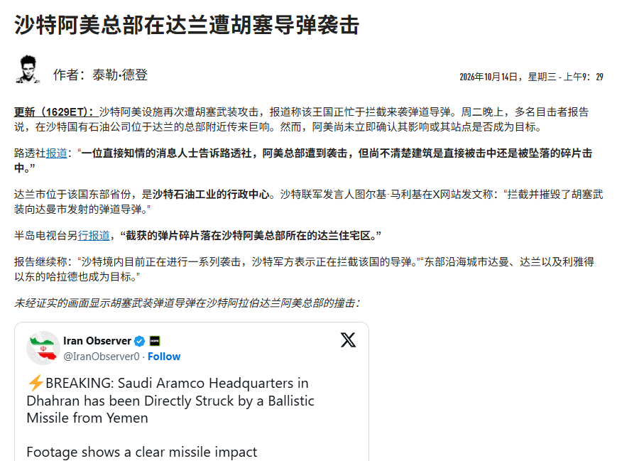
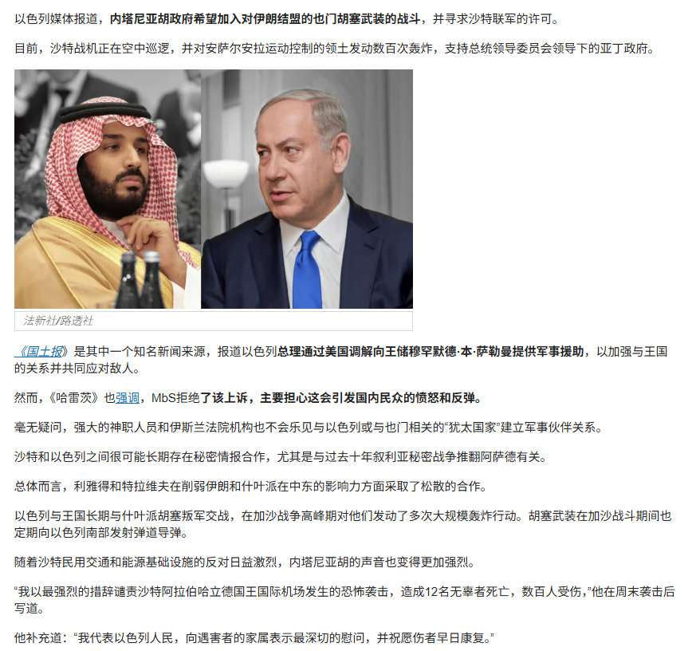
背景与关键数据
- 达兰：沙特东部省，沙特阿美总部所在地，紧邻全球最大的加瓦尔油田和拉斯坦努拉炼油厂，是沙特石油工业的行政中心。
- 事件：周二晚达兰总部附近传来巨响；路透社消息人士称总部遭袭但不确定是直接命中还是拦截碎片；沙特联军发言人称拦截并摧毁了射向达曼的弹道导弹；半岛电视台称碎片落在达兰住宅区。东部沿海的达曼、达兰和利雅得以东的哈拉德都是目标。周末利雅得哈立德国王国际机场遇袭造成 12 人死亡、数百人受伤。
- 以色列角度：以色列媒体报道内塔尼亚胡政府希望加入对伊朗盟友胡塞的战斗，通过美国向沙特王储穆罕默德·本·萨勒曼提供军事援助；《哈雷茨》报道王储拒绝，担心引发国内民众反弹。沙特和以色列在情报上长期有秘密合作，但公开军事合作在国内政治上仍是禁区。
- 大背景：从帖 4、帖 17 的措辞（"自中东冲突开始以来"、"伊朗战争"）看，2026 年中东有一场涉及伊朗的战争，胡塞是伊朗阵营的一部分，沙特正在空袭胡塞控制区支持亚丁政府。
图片解读
图 1是 zerohedge 文章截图（作者泰勒·德登，2026 年 10 月 14 日上午 9:29）：标题"沙特阿美总部在达兰遭胡塞导弹袭击"，更新段落、路透社和半岛电视台的引述，以及一条 Iran Observer 账号的推文（"沙特阿美总部被来自也门的弹道导弹直接击中"，文章注明未经证实）。
图 2是文章后半部分：沙特与以色列的照片（王储与内塔尼亚胡），以色列寻求加入打击胡塞、沙特拒绝的报道，两国历史上的秘密合作，以及内塔尼亚胡对利雅得机场袭击的谴责声明。
为什么重要 / 对市场和经济的含义
- 油价传导链：胡塞打沙特本土 → 供应风险溢价 → 布伦特 107 美元（帖 14）→ 通胀预期 → 美联储加息（帖 15）→ 美债 5.25%（帖 7）。今天所有美国利率的帖子，源头都在这里。
- 黄金的两条渠道：摩根士丹利的数据（帖 4）显示目前"油涨日黄金跌 0.5%"，也就是加息渠道压过避险渠道。只有当冲突升级到威胁全球增长（滞胀）时，黄金的避险属性才会主导。
- 对中国：中国是沙特原油最大买家，油价 107 美元直接推高上游成本，加剧帖 20 里"上热下冷"（上游涨价、中下游增收不增利）的格局。
- 对沙特：阿美股价、沙特财政（预算平衡油价约 90 美元）、以及 OPEC+ 的增产决策都受影响。
延伸知识
- 2019 年 9 月阿布盖格袭击：胡塞（伊朗被指幕后）无人机和导弹打击沙特阿布盖格和胡赖斯设施，沙特产量一夜腰斩 570 万桶/日（占全球供应 5%），布伦特单日涨 15%，是 1991 年海湾战争以来最大单日涨幅。沙特两周内恢复了产能，油价随后回吐。这次袭击的是总部而非产能设施，对实际供应影响有限，市场定价的是"下一次会不会打油田"。
- 油价对美国 CPI 的传导：能源约占美国 CPI 权重 7%，油价每涨 10 美元大约推高整体 CPI 0.2 到 0.3 个百分点，还有对运输、化工的二次传导。
帖 17 · 18:51 · FT：关注美国正在进行的对富人征税
FT 评论认为，比起加州的亿万富豪财富税和民主党的"未实现利得税"，更可行的加税方式是提高联邦企业所得税：只对不到 2% 的企业提税 6 到 9 个百分点，十年可增收约 4 万亿美元。读全文收起
帖子原文
FT： 关注美国正在进行的对富人征税 #其他国家经济#
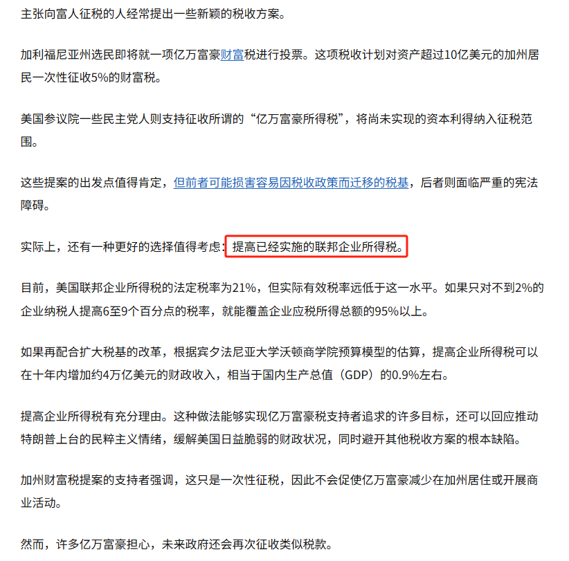
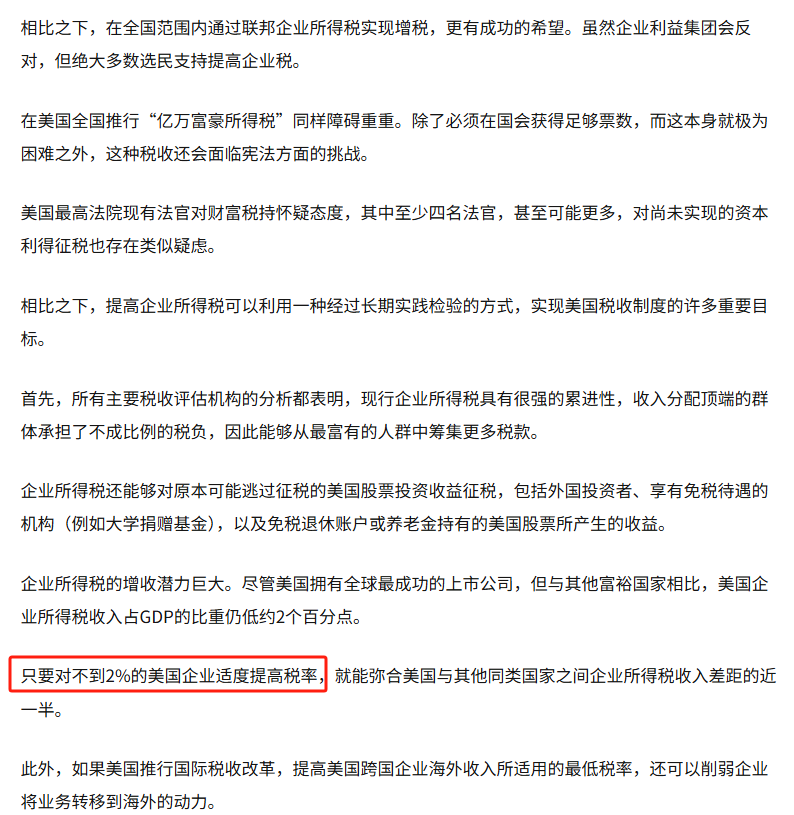
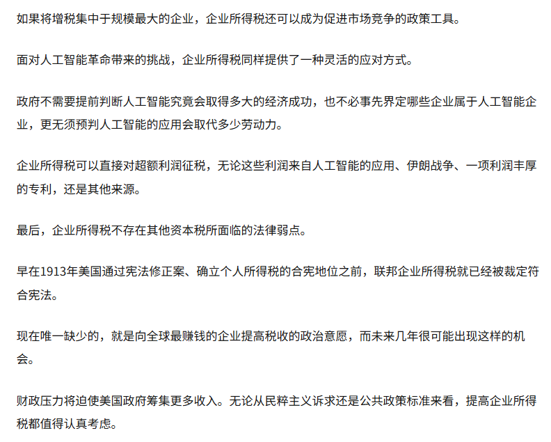
背景与关键数据
- 三种方案：
- 加州亿万富豪财富税：对资产超 10 亿美元的加州居民一次性征 5%。问题是税基会跑（富豪搬去德州、佛州）。
- 参议院民主党的"亿万富豪所得税"：把未实现的资本利得（股票涨了没卖）纳入征税。问题是宪法障碍，最高法院至少四名法官对财富税和未实现利得征税持怀疑态度。
- 提高联邦企业所得税：法定税率 21%（2017 年减税法案从 35% 降下来的），实际有效税率远低于此。
- 企业税方案的数字：对不到 2% 的企业纳税人提高 6 到 9 个百分点，就能覆盖企业应税所得的 95% 以上；配合扩大税基，宾大沃顿预算模型估算十年增收约 4 万亿美元，约占 GDP 0.9%。美国企业所得税收入占 GDP 的比重比其他富裕国家低约 2 个百分点，只对 2% 的企业提税就能弥补一半差距。
- 为什么企业税更好：累进性强（收入顶端承担不成比例的税负）；能对原本逃税的美国股票收益征税（外国投资者、大学捐赠基金、免税退休账户）；1913 年个人所得税修宪之前企业所得税就已被裁定合宪，没有法律弱点；配合国际最低税可以削弱企业把业务转移海外的动力；可以直接对超额利润征税，无论利润来自 AI、伊朗战争还是专利，政府不需要预判 AI 会不会成功。
- 现实约束：企业利益集团反对，但绝大多数选民支持；缺的是政治意愿，而财政压力会迫使政府行动。
图片解读
三张截图是 FT 评论的中文译文。第一张讲加州财富税和参议院方案及其缺陷，红框标出"提高已经实施的联邦企业所得税"这个核心主张，以及"只对不到 2% 的企业提高 6 到 9 个百分点就能覆盖 95% 以上应税所得"。第二张论证企业税的累进性、覆盖面和国际比较，红框是"只要对不到 2% 的美国企业适度提高税率"。第三张讲企业税作为应对 AI 革命的灵活工具、合宪性，以及"财政压力将迫使美国政府筹集更多收入"。
为什么重要 / 对市场和经济的含义
- 财政可持续性是今天的暗线：美债期限溢价 75 个基点（帖 7）、黄金作为"财政对冲"（帖 4）、法德利差 142 个基点（帖 14），都在给政府财政定价。加税是财政整固的一条腿，另两条是削支和通胀。FT 这篇文章就是在讨论美国会选哪条腿。
- 对美股：企业税从 21% 提到 27% 到 30%，粗算每提高 1 个百分点标普 500 每股盈利减少约 1%，也就是 6% 到 9% 的盈利冲击，正好落在 2% 的大企业头上，也就是指数权重股。
- "伊朗战争的超额利润"：暗示能源和国防企业的暴利税讨论已经在桌上。
- Jason 的视角：把美国"向企业和富人加税"（帖 17）和中国"给育龄家庭发钱"（帖 19）、"出口退税下调"（帖 11）放在同一天，指向一个共同主题：各国财政都在从"补企业、补出口"转向"补家庭、补需求"，这是财政再分配方向的变化。
延伸知识
- 税收归宿（tax incidence）：法律上谁交税和经济上谁承担是两回事。企业税的负担由股东、员工、消费者分摊，比例在经济学里争议很大。FT 文章采信的是"主要由股东承担"的估计，所以认为它累进。
- 美国已有的先例：2022 年《通胀削减法案》引入了 15% 的企业最低税（针对账面利润超 10 亿美元的公司）和 1% 的股票回购税。FT 的主张是沿这条路走得更远。
- 未实现利得征税的宪法问题：2024 年最高法院 Moore 诉美国案虽然维持了一项海外利润税，但多位法官在意见书里对"对未实现收入征税"表达了保留，这就是文章说"至少四名法官持怀疑态度"的出处。
帖 18 · 19:08 · 育娲：《世界预期人口报告 2026》
育娲人口智库用自创的"预期人口"指标衡量，中国 2025 年的预期人口只有 2.64 亿，是实际人口的 19%，在 237 个国家和地区里排第 226 位，过去十年降幅 75% 全球最大。读全文收起
帖子原文
育娲： 《世界预期人口报告 2026》 #人口#
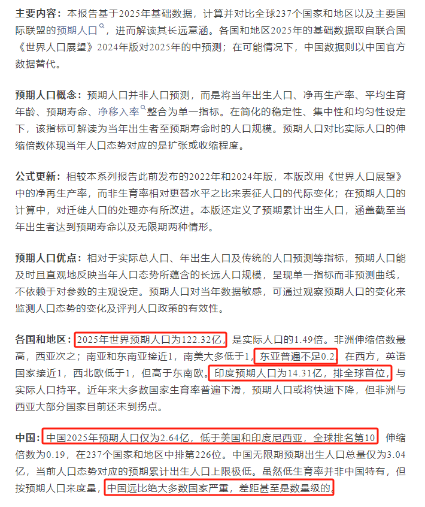
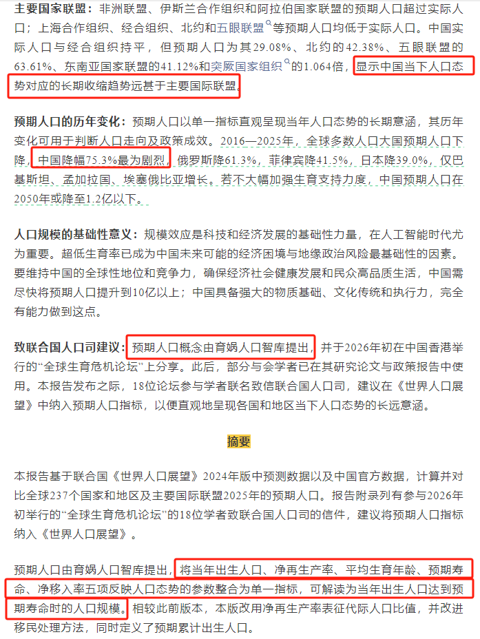
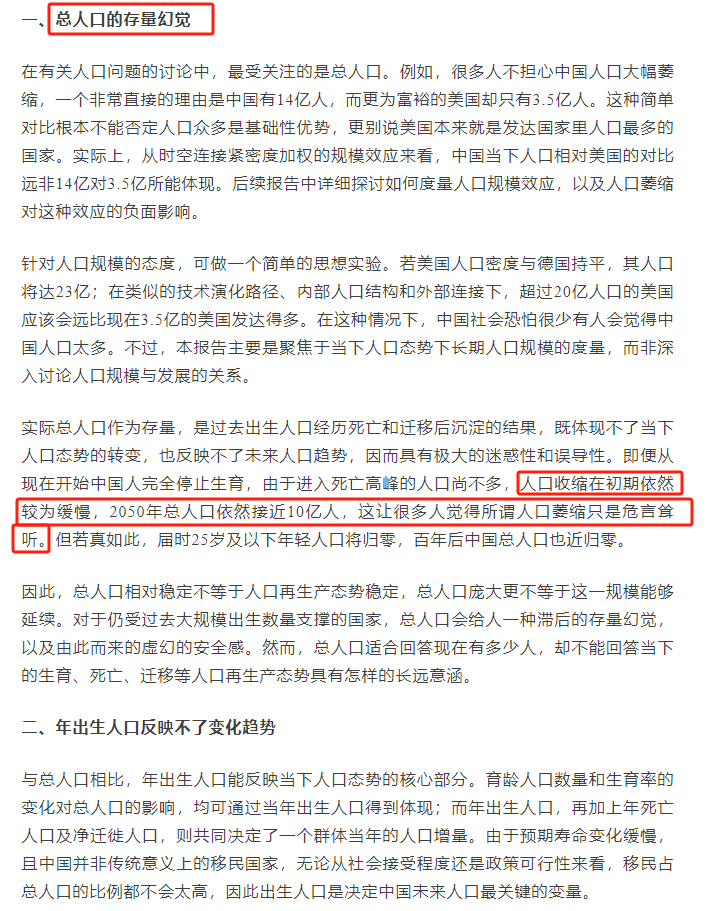
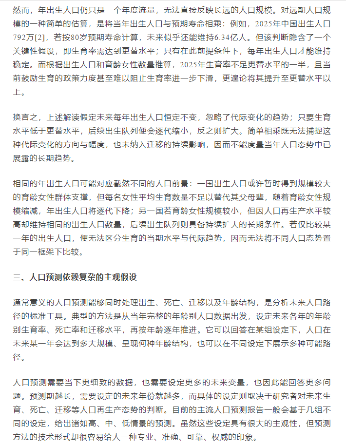
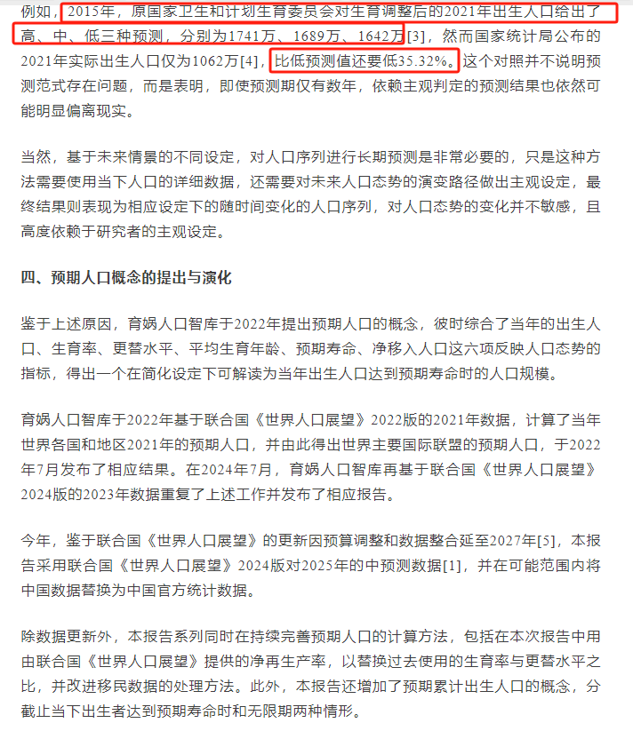
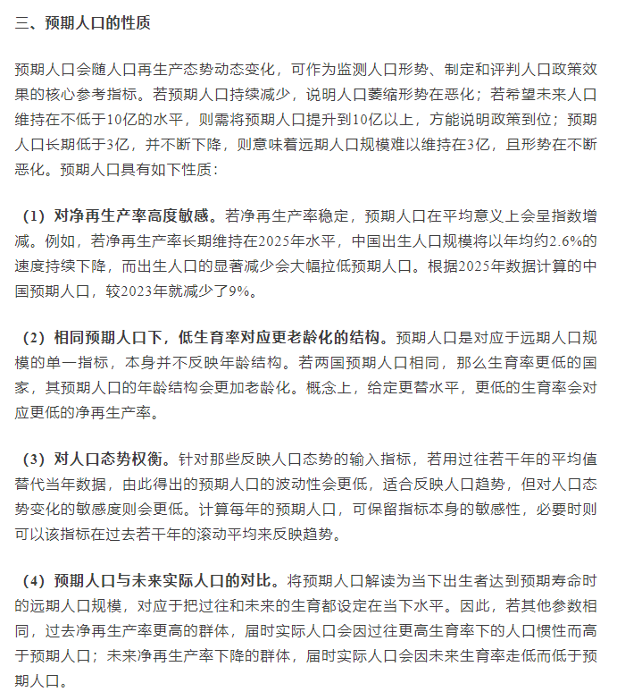
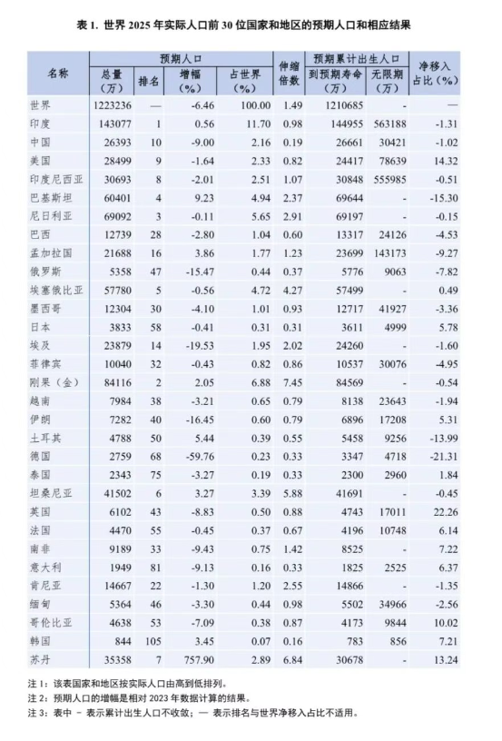
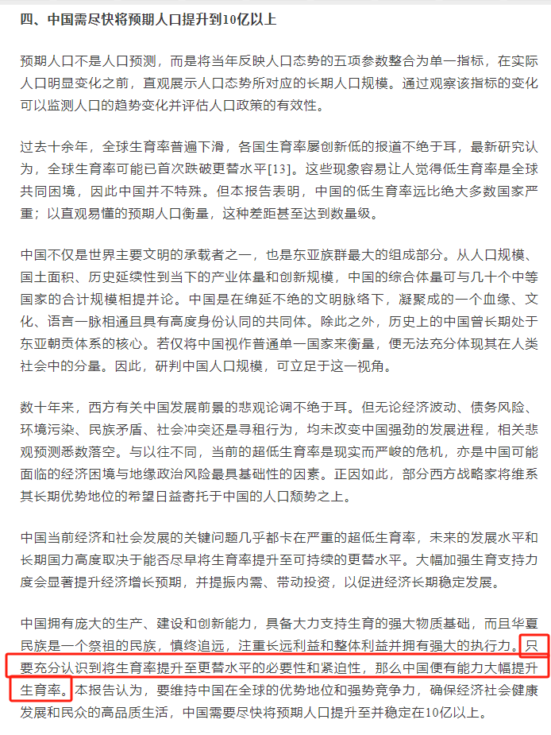
背景与关键数据
- 育娲人口研究：携程创始人梁建章、经济学家任泽平、人口学者黄文政等人发起的民间智库，立场是积极鼓励生育。读它的报告要分清"数据"和"主张"。
- 什么是预期人口：它不是人口预测。做法是把当年的五个参数（出生人口、净再生产率、平均生育年龄、预期寿命、净移入率）冻结，算出"如果这个态势一直持续，当年出生的人活到预期寿命时，人口会是多少"。类比"预期寿命"的构造方法：预期寿命是把今年各年龄的死亡率冻结算出来的假想寿命，预期人口是把今年的生育、死亡、迁移态势冻结算出来的假想稳态人口。
- 伸缩倍数：预期人口 ÷ 实际人口。大于 1 表示当前态势下人口还会扩张，小于 1 表示会收缩。中国 0.19 意味着按现在的生育态势，长期人口只有现在的 19%。
- 全球对比：2025 年世界预期人口 122.32 亿，是实际人口的 1.49 倍；非洲伸缩倍数最高，东亚普遍不足 0.2；印度预期人口 14.31 亿排第一，与实际人口持平；中国 2.64 亿排第 10，低于美国（2.85 亿，靠移民）和印尼（3.07 亿）。
- 与国际组织对比：中国实际人口与经合组织相当，但预期人口只有经合组织的 29%、北约的 42%、五眼联盟的 64%、东盟的 41%。
- 历年变化：2016 到 2025 年中国预期人口下降 75.3%，俄罗斯 −61.3%，菲律宾 −41.5%，日本 −39.0%，只有巴基斯坦、孟加拉、埃塞俄比亚在增长。按 2025 年数据算的中国预期人口比 2023 年又少了 9%。若不大幅加强支持，2050 年可能降到 1.2 亿以下。
- 预测为什么不可靠：2015 年原国家卫计委对 2021 年出生人口给出高中低三档预测 1,741 万、1,689 万、1,642 万，实际只有 1,062 万，比最低档还低 35.32%。
- 总人口的"存量幻觉"：即便中国从现在起完全停止生育，由于进入死亡高峰的人口尚不多，2050 年总人口仍接近 10 亿。总人口稳定不等于再生产态势稳定。
图片解读
- 图 1：报告"主要内容"和"预期人口概念"，红框标出 2025 年世界预期人口 122.32 亿、东亚普遍不足 0.2、印度 14.31 亿居首、中国 2.64 亿排第 10、"中国远比绝大多数国家严重，差距甚至是数量级的"。
- 图 2：与主要国际联盟的对比、历年变化（中国降幅 75.3% 最为剧烈）、"人口规模的基础性意义"，以及预期人口概念由育娲提出并建议联合国纳入《世界人口展望》。
- 图 3：第一节"总人口的存量幻觉"。思想实验：美国人口密度若与德国持平将达 23 亿，20 亿人口的美国会比现在发达得多。红框是"即便从现在起完全停止生育，2050 年总人口依然接近 10 亿，这让很多人觉得人口萎缩是危言耸听"。
- 图 4：第二节"年出生人口反映不了变化趋势"。792 万出生人口乘以 80 年寿命得 6.34 亿的算法隐含"生育率达到更替水平"的假设，而 2025 年生育率不到更替水平一半。第三节"人口预测依赖复杂的主观假设"。
- 图 5：2015 年官方预测与 2021 年实际（1,062 万）的对比，低 35.32%。第四节讲预期人口概念 2022 年提出、2024 年更新、本版改用净再生产率。
- 图 6：预期人口的四个性质：对净再生产率高度敏感（若维持 2025 年水平，出生人口每年降 2.6%）；相同预期人口下低生育率对应更老龄化；可用多年均值平滑；与未来实际人口的关系。
- 图 7：表 1，世界实际人口前 30 位的预期人口。关键行：世界 12.23 亿（伸缩倍数 1.49）；印度 14.31 亿（1.00）；中国 2.64 亿（增幅 −9.00%，占世界 2.16%，伸缩倍数 0.19）；美国 2.85 亿（0.82，净移入占 14.32%）；巴基斯坦 6.04 亿（2.37）；尼日利亚 6.91 亿（2.91）；俄罗斯 0.54 亿（0.37）；日本 0.38 亿（0.31）；德国 0.28 亿（0.33）；韩国 0.08 亿（0.16，全表最低）；英国 0.61 亿（0.88，净移入 22.26%）。
- 图 8：第四节"中国需尽快将预期人口提升到 10 亿以上"，论证中国的低生育率不是"全球共同困境"的普通一例，而是数量级的差距；红框是"只要充分认识到将生育率提升至更替水平的必要性和紧迫性，那么中国便有能力大幅提升生育率"。
为什么重要 / 对市场和经济的含义
- 人口是今天所有国内需求问题的底层变量：就业总量收缩（帖 6）、房价（帖 3、10、21）、家电（帖 5）、校招（帖 20），都是同一条曲线的不同切面。预期人口把"几十年后"的问题压缩成一个当下可读的数字。
- 投资含义：长期看，婴幼儿、K12 教育、首套住房的需求结构性下滑；养老、医疗、自动化（帖 20 里企业用智能设备替代基础岗位）结构性上升。
- 政策含义：报告建议把预期人口拉回 10 亿以上，相当于要求生育率回到更替水平附近，这在东亚没有先例。它的现实作用是为大额生育补贴（帖 19）提供紧迫感论证。
- 批判性阅读：伸缩倍数对当年出生人口极其敏感（2025 年出生 792 万本身可能受龙年、疫情推迟等短期因素影响），指标设计本身就会放大紧迫感。2015 年预测失准的例子是双刃剑，它说明官方预测过于乐观，也说明任何单一指标外推都不可靠。
延伸知识
- 三个生育率指标：总和生育率（TFR）是一个女性一生平均生育的孩子数，更替水平约 2.1；净再生产率（NRR）是一个女性平均生育的、能活到育龄的女儿数，NRR=1 即人口稳态；预期人口本版就是用 NRR 来刻画代际变化。
- 人口惯性（population momentum）：生育率跌破更替水平后，因为年龄结构年轻，总人口还能涨几十年；反过来，等年龄结构老化后，即使生育率回升总人口也会持续下降很久。"存量幻觉"说的就是正惯性阶段的错觉，中国正在从正惯性转向负惯性。
- 韩国 0.16 的伸缩倍数：韩国总和生育率 0.72 时对应预期人口只有实际的 16%，是全球最低。中国 0.19 与之相差不远。
帖 19 · 19:14 · 梁建章：是时候给育龄家庭发钱了
梁建章算了一笔账：育龄女性每年少 328 万，要维持 800 万出生人口生育率得保持在 1.1 以上，而中国正在复制韩国八年前的下滑轨迹；他主张每孩补贴至少 20 万元，年花费约 2 万亿、占 GDP 1.4%，比出口退税还少，是"最好的新基建"。读全文收起
帖子原文
梁建章: 是时候给育龄家庭发钱了 #TAX#
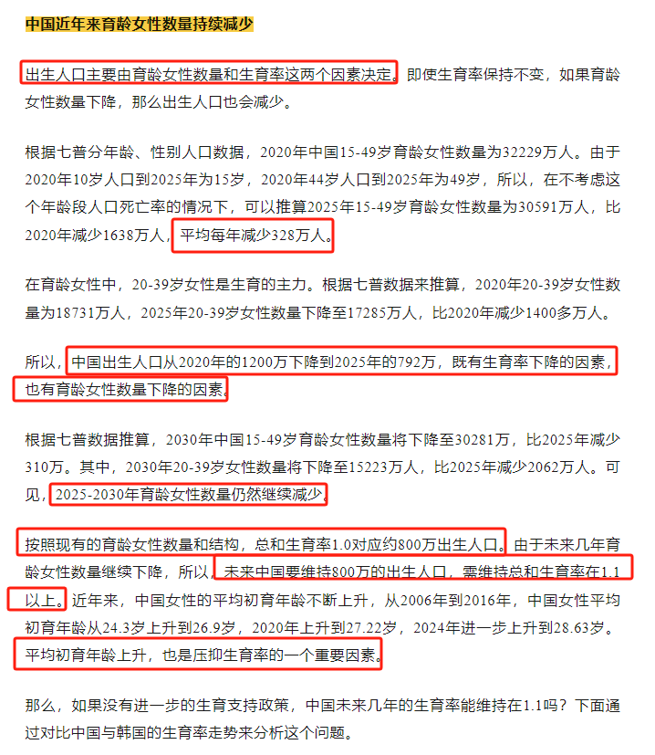
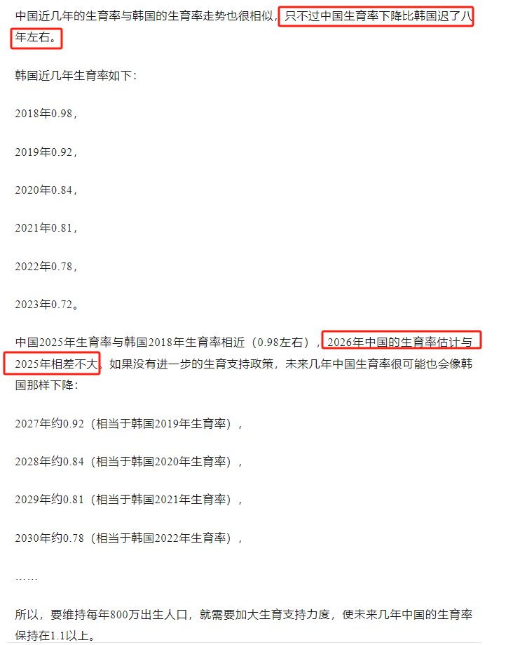
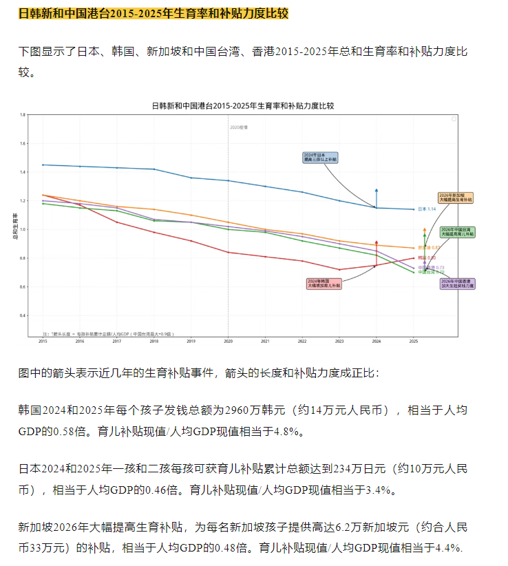
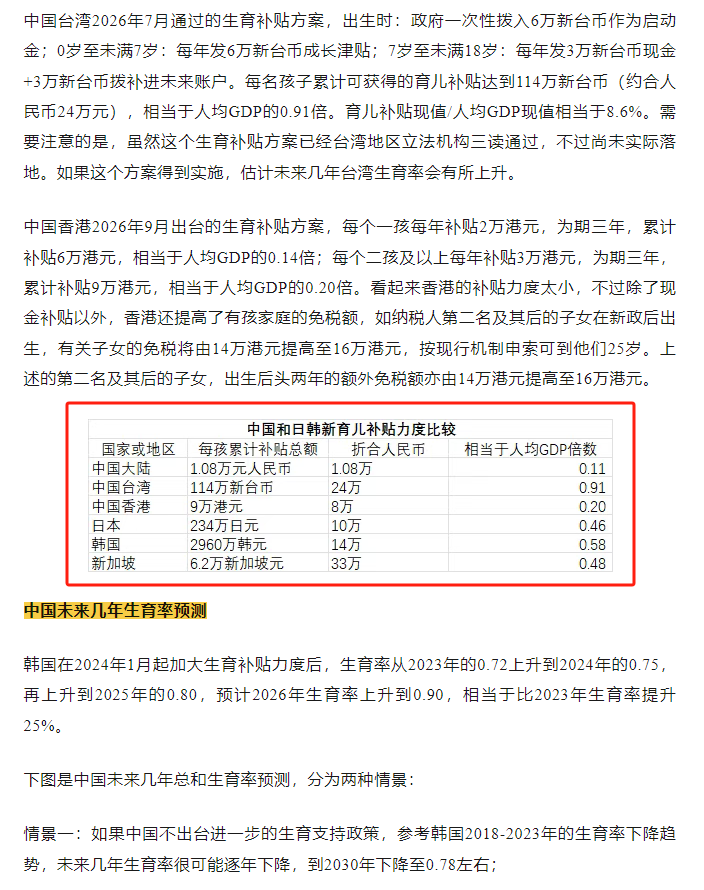
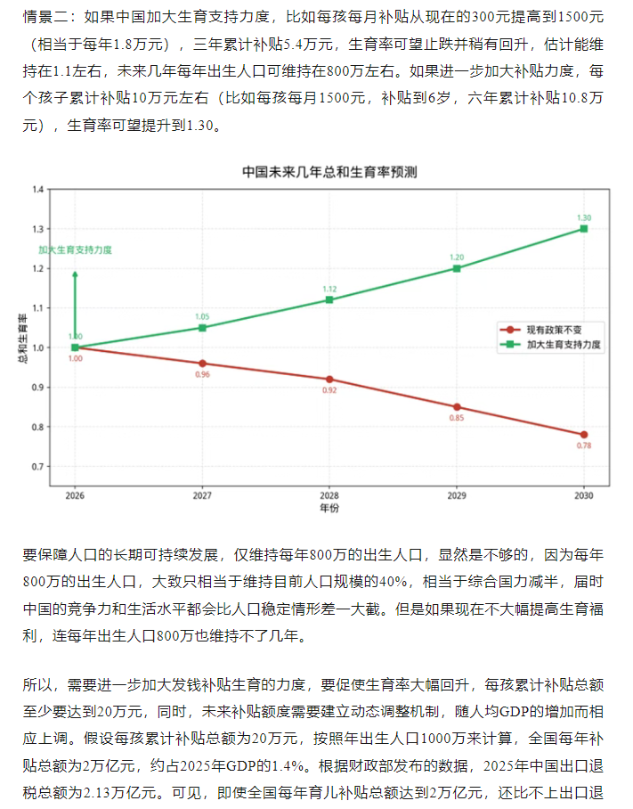
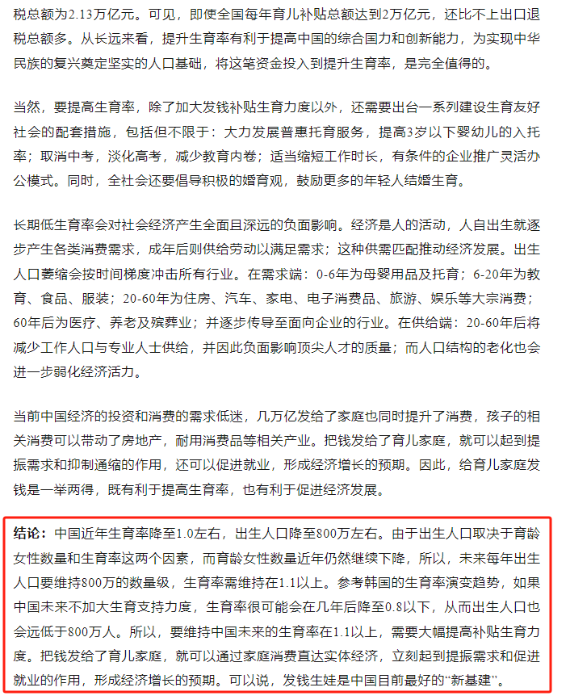
背景与关键数据
- 出生人口 = 育龄女性数量 × 生育率。两个因子都在降：
- 15 到 49 岁育龄女性：2020 年 3.22 亿 → 2025 年 3.06 亿（五年少 1,638 万，年均 −328 万）→ 2030 年 3.03 亿。
- 生育主力 20 到 39 岁女性：2020 年 1.87 亿 → 2025 年 1.73 亿 → 2030 年 1.52 亿，十年减少 18%。
- 出生人口从 2020 年 1,200 万降到 2025 年 792 万。
- 按现在的女性数量和结构，总和生育率 1.0 对应约 800 万出生人口；未来几年要维持 800 万需要 1.1 以上。
- 初育年龄推迟：从 2006 年 24.3 岁升到 2016 年 26.9 岁、2020 年 27.22 岁、2024 年 28.63 岁。推迟生育本身就会压低当年的生育率。
- 韩国的镜子：韩国 2018 到 2023 年生育率 0.98、0.92、0.84、0.81、0.78、0.72。中国 2025 年约 0.98，相当于韩国 2018 年，晚了八年。若无新政策，中国 2027 到 2030 年可能走 0.92、0.84、0.81、0.78。韩国 2024 年 1 月加大补贴后，生育率从 0.72 回升到 0.75（2024）、0.80（2025），预计 2026 年 0.90，三年提升 25%。
- 补贴力度对比（每孩累计补贴 ÷ 人均 GDP）：中国大陆 1.08 万元（0.11 倍，即现行 3 岁以下每月 300 元）；中国香港 9 万港元（0.20 倍）；日本 234 万日元（0.46 倍）；新加坡 6.2 万新元（0.48 倍）；韩国 2,960 万韩元（0.58 倍）；中国台湾 114 万新台币（0.91 倍，2026 年 7 月通过尚未落地）。
- 两个情景：不加码，2030 年生育率降到 0.78；每月补贴从 300 元提到 1,500 元（三年累计 5.4 万），生育率可望维持 1.1 左右；每孩累计 10 万，可望升到 1.30。
- 财政账：建议每孩至少 20 万元并随人均 GDP 动态上调。按 1,000 万出生人口算，年补贴 2 万亿元，约为 2025 年 GDP 的 1.4%；对比财政部数据，2025 年出口退税总额 2.13 万亿。
图片解读
- 图 1：育龄女性数量测算，红框标出"出生人口主要由育龄女性数量和生育率决定"、"平均每年减少 328 万人"、"总和生育率 1.0 对应约 800 万出生人口"、"需维持 1.1 以上"、"平均初育年龄上升也是压抑生育率的重要因素"。
- 图 2：韩国 2018 到 2023 年生育率逐年数据，以及中国"比韩国迟了八年左右"的推演，2027 到 2030 年的对应值。
- 图 3：折线图"日韩新和中国港台 2015 到 2025 年生育率和补贴力度比较"。纵轴总和生育率 0.4 到 1.8，横轴 2015 到 2025 年。日本从 1.45 降到 1.14（最高），韩国从约 1.24 降到 0.72 再回升到 0.80，新加坡、台湾、香港在 0.7 到 1.0 之间。图中箭头标注各地的补贴事件，箭头长度与补贴力度成正比（2024 年日本、韩国，2026 年新加坡、台湾、香港）。下方文字给出韩国、日本、新加坡的补贴金额。
- 图 4：台湾 2026 年 7 月方案（出生时 6 万新台币启动金、0 到 7 岁每年 6 万、7 到 18 岁每年 3 万现金加 3 万未来账户，累计 114 万）和香港 2026 年 9 月方案（一孩每年 2 万港元三年、二孩每年 3 万三年，并提高子女免税额）。红框表格是六个地区的补贴总额、折合人民币和人均 GDP 倍数。韩国 2024 年加码后的回升数据。情景一：不加码，2030 年 0.78。
- 图 5：情景二的数字，以及折线图"中国未来几年总和生育率预测"：红线"现有政策不变"从 2026 年 1.00 降到 2030 年 0.78（0.96、0.92、0.85、0.78）；绿线"加大生育支持力度"升到 1.30（1.05、1.12、1.20、1.30）。下方讲 800 万出生只相当于维持现有人口的 40%，并给出 2 万亿的财政测算。
- 图 6：配套措施（普惠托育、取消中考、淡化高考、缩短工时、灵活办公）、低生育率对各行业的梯度冲击（0 到 6 岁母婴托育，6 到 20 岁教育食品服装，20 到 60 岁住房汽车家电，60 岁后医疗养老），以及红框结论："发钱生娃是中国目前最好的新基建"。
为什么重要 / 对市场和经济的含义
- 财政方向的信号：2 万亿对比出口退税 2.13 万亿，是在说"把补企业的钱转给家庭"。这和帖 11（出口退税从 13% 降到 9%，正在砍）、帖 17（美国讨论向企业和富人加税）放在同一天，指向全球财政从供给端转向需求端的趋势。
- 宏观逻辑：梁建章的核心论点是生育补贴等于直接消费刺激。在需求不足、通缩压力下，给育儿家庭发钱能立刻转化为母婴、教育、住房消费，所以"一举两得"。
- 对资产的含义：若落地，利好母婴、乳制品、教育、改善型住房；若不落地，上述行业的长期需求曲线按情景一走。
- 批判性阅读：韩国 2024 到 2025 年的回升也有疫情后结婚补偿效应（2022 到 2024 年结婚登记回升）的贡献，不全是补贴；日本补了三十年生育率仍在 1.1 到 1.3 徘徊，说明补贴有天花板。梁的"5.4 万对应 1.1、10 万对应 1.30"是外推，不确定性很大。但"育龄女性数量每年 −328 万"这一条不依赖任何假设，它决定了即使生育率不变，出生人口也会持续下滑。
延伸知识
- 贝克尔的生育经济学：孩子有"数量"和"质量"两个维度，收入上升时家庭倾向于少生、多投入，这就是富裕社会生育率下降的理论基础。补贴的作用是降低"数量"的相对价格，但只要"质量"投入（教育军备竞赛）的价格不降，效果就有限，这也是为什么梁建章要配套"取消中考、淡化高考"。
- 匈牙利的实验：2010 年代匈牙利把家庭支持开支提到 GDP 的 5% 左右（全球最高），生育率从 1.23 升到 2021 年的 1.59，之后又回落到 1.5 以下。它证明补贴有效，也证明有上限。
- 进度效应（tempo effect）：当女性集体推迟生育，当年的总和生育率会被压低，但不代表她们最终生得少。初育年龄从 24 岁推到 28.6 岁的过程中，每年"消失"的出生一部分只是推迟了。等推迟停止，生育率会有一个机械性回升，这是读东亚生育率数据时要留意的技术细节。
帖 20 · 19:20 · 经济观察报：2027 届校招名额大概率压缩至往年一半
制造业企业因为订单流失、原材料涨价、利润被挤压，正在砍 2027 届校招名额，并用"便宜的本科生"替代研究生、用智能设备替代基础岗位；校招需求指数已比 2022 年峰值缩水四成。读全文收起
帖子原文
经济观察报： 2027 年应届生招聘名额大概率要压缩至往年一半。 #职业#
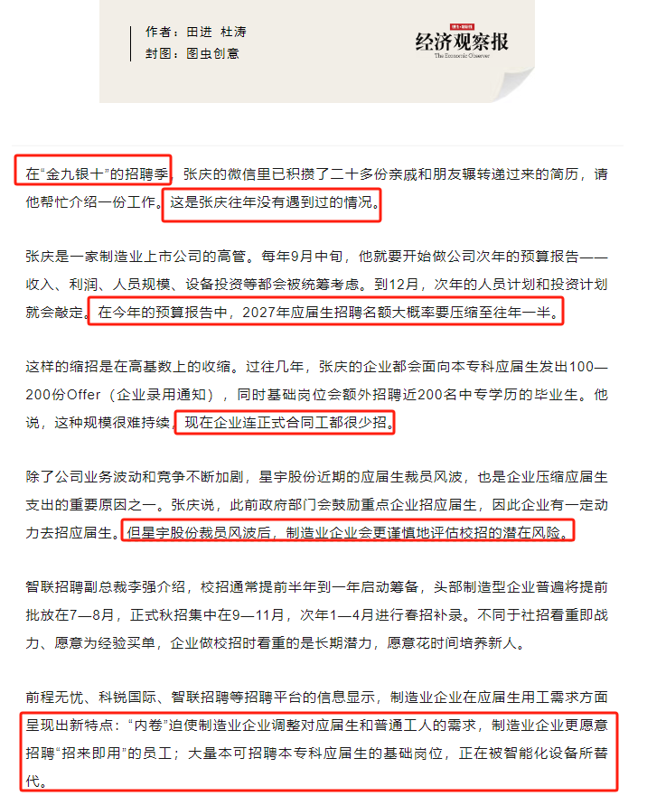
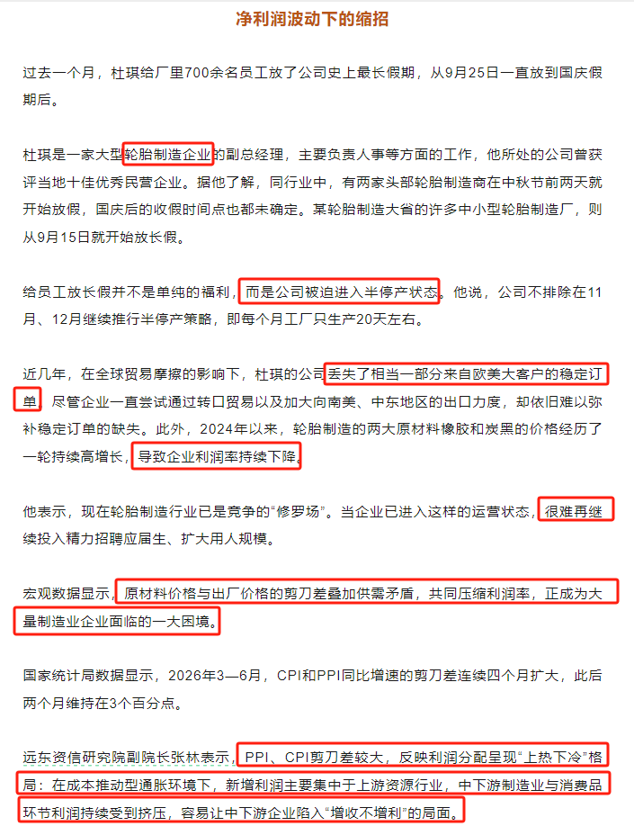
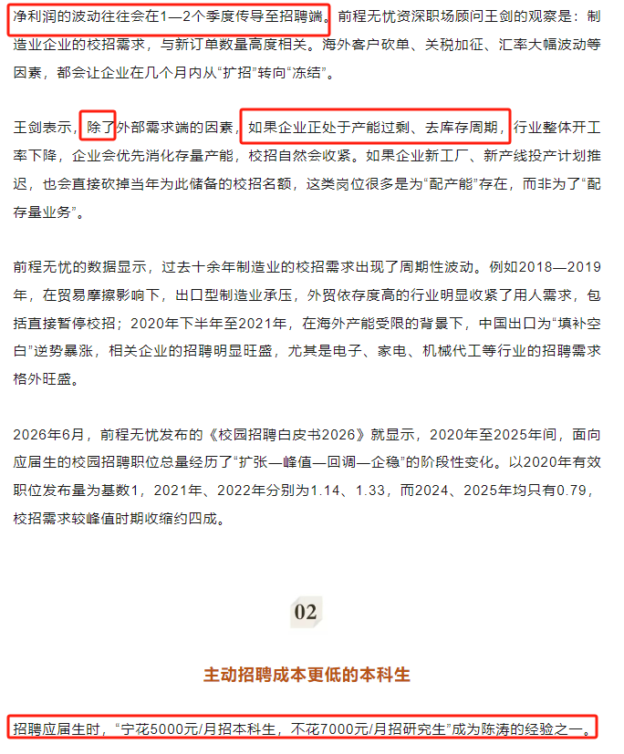
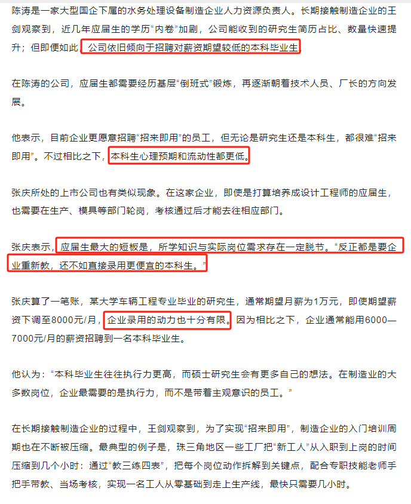
背景与关键数据
- 两个企业案例：
- 张庆（制造业上市公司高管）：今年收到二十多份亲友转来的简历求帮忙，往年没有过。在 2027 年预算里应届生名额压缩至往年一半。以往每年向本专科毕业生发 100 到 200 份 offer，另招近 200 名中专毕业生做基础岗位，现在连正式合同工都很少招。星宇股份裁应届生的风波让企业更谨慎评估校招风险。
- 杜琪（大型轮胎企业副总经理）：给 700 多名员工放了公司史上最长假（9 月 25 日放到国庆后），实际是被迫半停产，11 到 12 月可能继续每月只生产 20 天。原因是丢失了相当部分欧美客户的稳定订单，转口贸易和南美中东市场补不上；橡胶和炭黑 2024 年以来涨价导致利润率持续下降。
- 宏观背景：国家统计局数据显示 2026 年 3 到 6 月 CPI 和 PPI 同比增速的剪刀差连续四个月扩大，之后两个月维持在 3 个百分点。远东资信张林的解读是"上热下冷"：成本推动型通胀下，新增利润集中在上游资源行业，中下游制造业和消费品环节利润被挤压，陷入"增收不增利"。
- 传导时滞：前程无忧王剑的观察是净利润波动通常在 1 到 2 个季度后传导至招聘端。海外客户砍单、关税、汇率波动都会让企业从"扩招"转为"冻结"；处于产能过剩、去库存周期的企业会优先消化存量人员。
- 校招需求指数：前程无忧《校园招聘白皮书 2026》以 2020 年有效职位发布量为 1，2021 年 1.14，2022 年 1.33（峰值），2024 年和 2025 年都只有 0.79，比峰值缩约四成。历史上 2018 到 2019 年贸易摩擦期间出口制造业暂停校招，2020 年下半年到 2021 年出口"填补空白"时招聘格外旺盛。
- 学历替代："宁花 5,000 元/月招本科生，不花 7,000 元/月招研究生"。某车辆工程研究生期望月薪 1 万，降到 8,000 企业也不愿要，因为 6,000 到 7,000 就能招到本科生；企业认为本科生执行力更高、心理预期和流动性更低。珠三角工厂通过"教三练四表"把新工人从入职到上岗压缩到几个小时。
图片解读
- 图 1：文章开头，红框标出"金九银十的招聘季"、"这是张庆往年没有遇到过的情况"、"2027 年应届生招聘名额大概率要压缩至往年一半"、"现在企业连正式合同工都很少招"、"星宇股份裁员风波后制造业企业会更谨慎地评估校招的潜在风险"，以及招聘平台观察到的新特点：企业更愿意招"招来即用"的员工，基础岗位正在被智能化设备替代。
- 图 2："净利润波动下的缩招"一节，轮胎企业的半停产案例，红框是"被迫进入半停产状态"、"丢失了相当一部分来自欧美大客户的稳定订单"、"导致企业利润率持续下降"、"很难再继续投入精力招聘应届生"、"原材料价格与出厂价格的剪刀差叠加供需矛盾正成为大量制造业企业面临的一大困境"，以及"上热下冷"的解读。
- 图 3：利润向招聘的 1 到 2 季度传导、产能过剩和去库存周期对校招的影响、2018 到 2021 年的历史周期、校招白皮书指数，以及第二节标题"主动招聘成本更低的本科生"和红框"宁花 5,000 元/月招本科生，不花 7,000 元/月招研究生"。
- 图 4：本科生替代研究生的具体逻辑（心理预期和流动性更低、所学与岗位脱节、"反正都是要企业重新教"），以及珠三角工厂把新工人上岗时间压缩到几小时的做法。
为什么重要 / 对市场和经济的含义
- 就业的"增量端"在收缩：帖 6 是就业总量第九年下降，这帖是新增入口（校招）砍半。每年 1,200 万以上的高校毕业生对着 0.79 的需求指数，青年失业压力会持续。
- 传导链条清晰：欧美订单流失（贸易摩擦，参考帖 11 的汽车出口管制）+ 上游涨价（油价 107 美元，帖 16）→ 中游利润率下降 → 1 到 2 个季度后砍校招。这意味着看 PPI 和工业企业利润数据，可以提前两个季度预判校招松紧。
- 学历通胀与薪资预期下调：研究生起薪被压到本科水平，年轻人的收入预期下降直接影响消费和结婚生育（帖 19）。
- 自动化替代：企业用智能设备替代本专科基础岗位，与 AI 资本开支逻辑（帖 12）是同一枚硬币：资本替代劳动在加速。
- 政策压力："稳就业"比生育补贴更紧迫，这是 Jason 把这帖紧接在人口两帖后面的用意。
延伸知识
- 奥肯定律：GDP 增速和失业率的经验关系。中国的经验版本是 GDP 每增长 1 个百分点大约对应 200 万新增就业，当增长放缓、同时企业用自动化替代劳动时，这个系数本身也在下降。
- "疤痕效应"（scarring）：对美国 2008 到 2010 年毕业生的研究发现，衰退期入职的学生起薪低 10% 以上，需要 10 到 15 年才追平正常年份的同龄人。校招砍半的影响不是一届的事。
- CPI 与 PPI 剪刀差：CPI 是消费端价格，PPI 是工业出厂价格。两者增速差扩大，通常意味着中游制造企业的售价涨不过成本（或售价跌得比成本快），利润被挤在中间。2026 年的特点是上游（能源、有色）涨价而下游（家电均价 −11%，帖 5；汽车价格战，帖 11）降价，中游两头受气。
帖 21 · 19:49 · 国信达：第 41 周全国住宅挂牌价指数
二手房挂牌价仍在周度下跌（全国 −0.17%，深圳 −0.56% 最深），Jason 自制的图显示 13 个主要城市 2026 年以来又跌了 1% 到 12%，叠加 2025 年末已比高点跌去的 19% 到 41%。读全文收起
帖子原文
国信达： 第 41 周，全国住宅出售挂牌价指数环比下降 0.17%，北京市挂牌价指数环比上涨 0.01%，上海市挂牌价指数环比下降 0.19%，广州市挂牌价指数环比下降 0.46%，深圳市挂牌价指数环比下降 0.56%。 #房价#
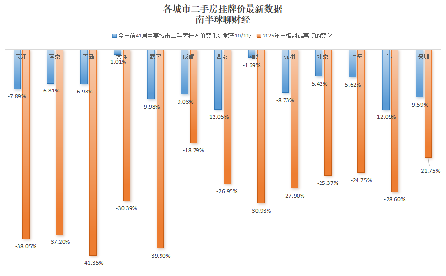
背景与关键数据
- 挂牌价：卖家在中介平台的报价。它比成交价（帖 10）领先，更直接反映卖家心理；但挂牌价高于成交价是常态，所以挂牌价跌幅通常大于成交价。
- 国信达：房地产数据机构，发布周频挂牌价指数。全国周环比 −0.17% 年化约 −8.5%，和瑞联成交价同比 −8.06%（帖 10）是同一个量级。
- 一线城市本周：北京 +0.01%（持平，是四个一线里唯一不跌的），上海 −0.19%，广州 −0.46%，深圳 −0.56%。
图片解读
图是 Jason 自制的"各城市二手房挂牌价最新数据"（署名南半球聊财经），每个城市两根柱：蓝色是今年前 41 周（截至 10 月 11 日）的变化，橙色是 2025 年末相对历史最高点的变化。
- 2026 年以来（蓝柱）：广州 −12.09%，西安 −12.05%，武汉 −9.98%，深圳 −9.59%，成都 −9.03%，杭州 −8.73%，天津 −7.89%，青岛 −6.93%，南京 −6.81%，上海 −5.62%，北京 −5.42%，福州 −1.69%，大连 −1.01%。
- 2025 年末相对高点（橙柱）：青岛 −41.35%，武汉 −39.90%，天津 −38.05%，南京 −37.20%，福州 −30.93%，大连 −30.39%，广州 −28.60%，杭州 −27.90%，西安 −26.95%，北京 −25.37%，上海 −24.75%，深圳 −21.75%，成都 −18.79%。
- 两段叠加的粗略累计跌幅（复利近似）：武汉约 −46%，青岛约 −45%，天津约 −43%，南京约 −41%，广州约 −37%，西安约 −36%，杭州约 −34%，福州约 −32%，大连约 −31%，北京、上海、深圳约 −29%，成都约 −26%。
- 结构观察：跌得早的城市（大连、福州，2025 年末已 −30%）2026 年跌幅小；跌得晚的城市（成都，2025 年末只 −19%）2026 年跌 9%，正在补跌；广州是一线里最弱的，两段都接近最差。
为什么重要 / 对市场和经济的含义
- 与摩根大通框架的对照（帖 3）：摩根大通说上海企稳、深圳下一个、北京和广州观察。本周数据是北京持平、上海小跌、深圳跌最多。一周的数据噪音大，不能据此否定摩根大通的结构判断，但至少说明"企稳"目前只在成交价和租金层面，卖家报价还没止跌。
- "跌幅收窄"的真实含义：一线城市 2026 年至今 −5% 到 −12%，年化仍是双位数附近，离"止跌"还有距离。
- 财富效应：主要城市房价从高点跌 30% 到 45%，对持有房产的家庭是巨大的账面损失。这是家电（帖 5）、汽车内销（帖 11）疲弱和校招收缩（帖 20）之外，消费不振的另一个解释。
延伸知识
- 三套房价数据怎么对照：统计局 70 城指数（最温和）、中介成交价（瑞联、贝壳）、挂牌价（国信达）。三者方向一致时信号最强；挂牌价先止跌、成交价再止跌、统计局最后确认，是典型的见底顺序。
- 房价财富效应的量级：学术研究估计房价每下跌 1 元，家庭消费减少约 0.03 到 0.05 元。中国城镇住房市值以数百万亿计，30% 的跌幅对应的消费拖累以万亿计。
- 日本对照：日本六大都市地价从 1991 年高点到 2005 年跌了约 70%，用了 14 年。中国主要城市目前 −30% 到 −45%、用时 4 到 5 年，处在日本周期的中段。
今日全图索引
| 帖号 | 时间（美西） | 主题 | 标签 | 图片文件名 |
|---|---|---|---|---|
| 帖 1 | 10-13 03:25 | 黄老板又给小白们上了最后一课 | 无 | 无 |
| 帖 2 | 10-13 04:23 | 放火的人教你救火 | #扯淡# | 无 |
| 帖 3 | 10-13 13:56 | 摩根大通：哪些城市房价率先企稳，租金收益率 2.4% 门槛 | #房价# | post3_img1.png |
| 帖 4 | 10-13 13:59 | 摩根士丹利：黄金不只是利率交易，目标 5,000 美元（附 PDF） | #金融# | post4_img1.png |
| 帖 5 | 10-13 14:01 | 摩根大通：9 月家电零售额 −13%，均价 −11% | #经济数据# | post5_img1.png |
| 帖 6 | 10-13 16:24 | Barchart：中国就业总量三阶段，2025 年 −950 万 | #经济数据# | post6_img1.png |
| 帖 7 | 10-13 16:45 | 贝莱德：10 年期美债 5.25%，上调美债、美股降至中性 | #金融# | post7_img1.png |
| 帖 8 | 10-13 17:34 | 调研趣事：门槛是两袋旅行袋 | 无 | 无 |
| 帖 9 | 10-13 18:03 | 瑞银：尊界刹车事件标志行业转折点 | 无 | post9_img1.png |
| 帖 10 | 10-13 18:05 | 瑞联：存量住宅均价季度环比 −1.50%、同比 −8.06% | #房价# | post10_img1.png |
| 帖 11 | 10-13 18:20 | 摩根士丹利：汽车出口从价格战转向管理贸易（附 PDF） | #经济数据# | post11_img1.png |
| 帖 12 | 10-13 18:23 | 摩根大通 A 股策略：杠铃配置，AI 盈利看多、资金面谨慎（附 PDF） | #A股# | post12_img1.png |
| 帖 13 | 10-13 18:25 | 摩根士丹利：上海保险调研，偏好高股息（附 PDF） | #A股# | post13_img1.png |
| 帖 14 | 10-13 18:31 | 摩根士丹利跨资产周报：美债 > 欧股 > 美股（附 PDF） | #金融# | post14_img1.png, post14_img2.png |
| 帖 15 | 10-13 18:44 | 彭博 / FedWatch：12 月加息概率约 90% | #金融# | post15_img1.png, post15_img2.png, post15_img3.png |
| 帖 16 | 10-13 18:47 | zerohedge：沙特阿美总部遭胡塞导弹袭击 | #其他国家经济# | post16_img1.png, post16_img2.png |
| 帖 17 | 10-13 18:51 | FT：对富人征税，提高企业所得税更可行 | #其他国家经济# | post17_img1.png, post17_img2.png, post17_img3.png |
| 帖 18 | 10-13 19:08 | 育娲：《世界预期人口报告 2026》，中国预期人口 2.64 亿 | #人口# | post18_img1.png 至 post18_img8.png |
| 帖 19 | 10-13 19:14 | 梁建章：给育龄家庭发钱，每孩 20 万、年 2 万亿 | #TAX# | post19_img1.png 至 post19_img6.png |
| 帖 20 | 10-13 19:20 | 经济观察报：2027 届校招名额压缩一半 | #职业# | post20_img1.png 至 post20_img4.png |
| 帖 21 | 10-13 19:49 | 国信达：第 41 周挂牌价指数，13 城跌幅图 | #房价# | post21_img1.png |
说明：帖 4、11、12、13、14 的 PDF 附件未下载，解读基于帖子正文和首页截图。图片原文件保存在
jason_images/2026-10-13/。